<!doctype html>
<html lang="en">
<head>
  <meta charset="utf-8">
  <meta name="viewport" content="width=device-width, initial-scale=1">
  <title>arxiv digest — 2026-09-22</title>
  <style>
:root {
  --bg: #ffffff;
  --fg: #1f2328;
  --muted: #59636e;
  --border: #d0d7de;
  --card: #f6f8fa;
  --link: #0969da;
}
body {
  max-width: 980px;
  margin: 0 auto;
  padding: 2rem 1rem 5rem;
  font-family: -apple-system, BlinkMacSystemFont, "Segoe UI", Helvetica, Arial, sans-serif;
  line-height: 1.55;
  color: var(--fg);
  background: var(--bg);
}
a { color: var(--link); }
img { max-width: 100%; height: auto; }
pre, code { background: var(--card); border-radius: 6px; }
pre { padding: 1rem; overflow-x: auto; }
blockquote { border-left: 4px solid var(--border); padding-left: 1rem; color: var(--muted); }
details { margin: 0.6rem 0; }
summary { cursor: pointer; font-weight: 600; }
.paper-figures-scroll {
  display: flex;
  gap: 1rem;
  overflow-x: auto;
  overscroll-behavior-x: contain;
  padding: 0.75rem 0.25rem 1rem;
  margin: 1rem 0 1.25rem;
  border-top: 1px solid var(--border);
  border-bottom: 1px solid var(--border);
  scroll-snap-type: x proximity;
}
.paper-figure-card {
  flex: 0 0 min(260px, 72vw);
  scroll-snap-align: start;
  background: var(--card);
  border: 1px solid var(--border);
  border-radius: 12px;
  padding: 0.55rem;
}
.paper-figure-card img {
  display: block;
  width: 100%;
  max-height: 240px;
  object-fit: contain;
  background: white;
  border-radius: 8px;
}
.paper-figure-caption {
  display: block;
  margin-top: 0.5rem;
  color: var(--muted);
  font-size: 0.85rem;
}
.figure-strip-hint {
  color: var(--muted);
  font-size: 0.9rem;
  margin-bottom: -0.3rem;
}
</style>
  <!-- MathJax: renders $...$ inline math and $$...$$ display math, plus
       \(...\) and \[...\]. Loaded from the official CDN; works offline
       once cached. Configured to skip code/pre blocks so arxiv IDs that
       look like dollar amounts don't get mangled. -->
  <script>
    window.MathJax = {
      tex: {
        inlineMath: [['$', '$'], ['\\(', '\\)']],
        displayMath: [['$$', '$$'], ['\\[', '\\]']],
        processEscapes: true,
        processEnvironments: true
      },
      options: {
        skipHtmlTags: ['script', 'noscript', 'style', 'textarea', 'pre', 'code'],
        ignoreHtmlClass: 'tex2jax_ignore',
        processHtmlClass: 'tex2jax_process'
      }
    };
  </script>
  <script id="MathJax-script" async
    src="https://cdn.jsdelivr.net/npm/mathjax@3/es5/tex-chtml.js"></script>
</head>
<body>
<header style="background-color: #333; color: white; padding: 15px; margin-bottom: 20px;">
  <h1 style="margin: 0; font-size: 24px;">
    <a href="https://ochelpan.github.io/arXiv_clean/" style="color: white; text-decoration: none;">Main</a>
  </h1>
</header>

<h1>Daily arXiv Report</h1>

<hr>
<p>
<a href="index.html">← Index</a>
 · <a href="papers_01.html">← Previous</a> · <a href="papers_03.html">Next →</a>
</p>
<hr>

<h2>Papers 21–40</h2>
<p><a id="paper-2609.21380"></a></p>
<h3 id="a-memory-information-window-in-finite-duration-quantum-control"><a href="http://arxiv.org/abs/2609.21380v1">A memory-information window in finite-duration quantum control</a></h3>
<p><strong>Authors:</strong> Doyeol, Ahn<br>
<strong>Type:</strong> theory · <strong>Category:</strong> quantum information and computing · <strong>PDF:</strong> <a href="https://arxiv.org/pdf/2609.21380v1">https://arxiv.org/pdf/2609.21380v1</a><br>
<strong>Analysis basis:</strong> full PDF text, analyzed in chunks
<strong>Topic relevance:</strong> <code>methods for driven-dissipative</code> <strong>3/5</strong> · <code>quantum measurements</code> <strong>3/5</strong> · <code>correlated / nonlocal dissipation</code> <strong>1/5</strong> · <code>driven-dissipative phase transition</code> <strong>1/5</strong></p>
<div class="figure-strip-hint">↔ Scroll figures horizontally</div>
<div class="paper-figures-scroll">
<figure class="paper-figure-card">
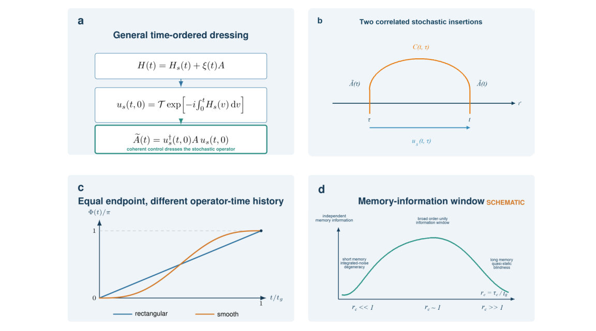
<figcaption class="paper-figure-caption"><b>Fig 1.</b> Fig. 1 | Time-ordered control dressing of correlated stochastic interactions. a, A time-dependent coherent propagator dresses the stochastic coupling operator without assuming commuting Hamiltonians. b, Environmental correlation connects stochastic insertions at two times while coherent evolution fixes the operator orientation at each insertion. c, Equal-endpoint rectangular and smooth Xπ controls realize the same final unitary but different accumulated-phase histories; the panel compares temporal weighting along the same operator path, not different geometric paths. d, Short-memory integrated-noise degeneracy and long-memory quasi-static blindness bound a broad, order-unity...</figcaption>
</figure>
<figure class="paper-figure-card">
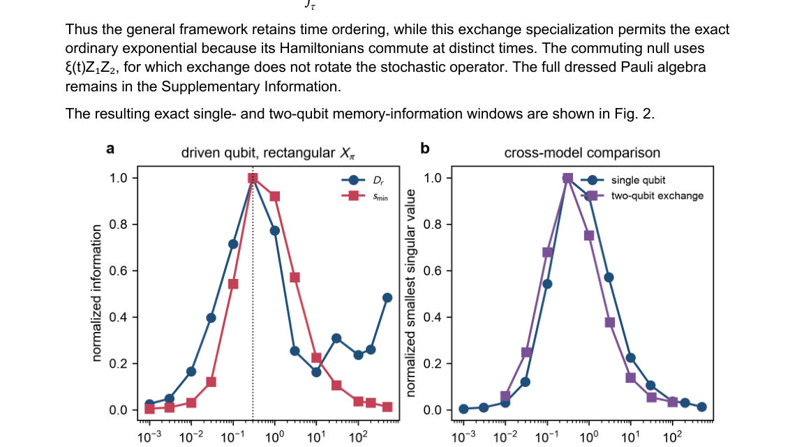
<figcaption class="paper-figure-caption"><b>Fig 2.</b> Fig. 2 | Exact memory-information windows. a, Normalized correlation-time derivative and smallest PTM- Jacobian singular value for a rectangular single-qubit Xπ gate at λ=0.084. b, Peak-normalized smallest singular values for the single-qubit and full informative two-qubit maps. Raw values are not compared across dimensions.</figcaption>
</figure>
<figure class="paper-figure-card">
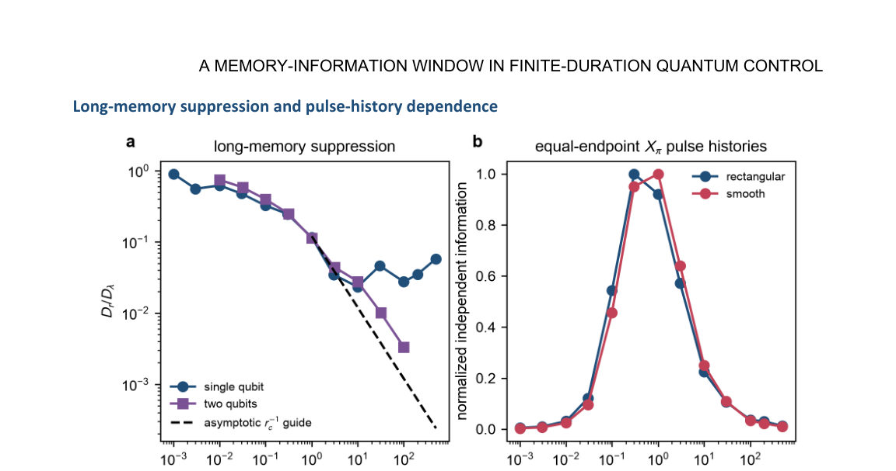
<figcaption class="paper-figure-caption"><b>Fig 3.</b> Fig. 3 | Asymptotic loss and control-history dependence. a, Exact 𝑫𝒓/𝑫𝝀 ratios. A finite-range log–log fit for the single-qubit rectangular control at 𝒓𝒄 = 1, 3 and 10 gives a slope of approximately −0.69. The two-qubit exchange calculation shows the same qualitative long-memory suppression. The dashed 𝒓𝒄</figcaption>
</figure>
<figure class="paper-figure-card">
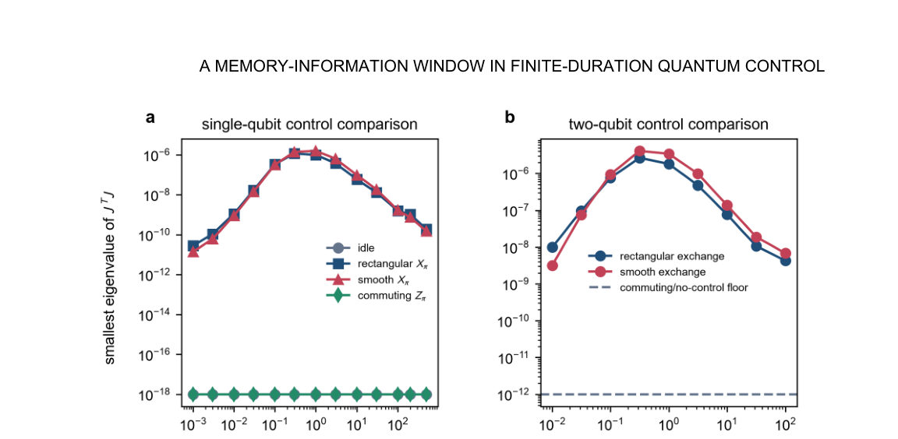
<figcaption class="paper-figure-caption"><b>Fig 4.</b> Fig. 4 | Control-induced memory observability. a, Single-qubit smallest eigenvalue of JTJ for idle, noncommuting Xπ and commuting Zπ controls. b, Two-qubit exchange controls with the commuting/no-control level at the numerical floor.</figcaption>
</figure>
<figure class="paper-figure-card">
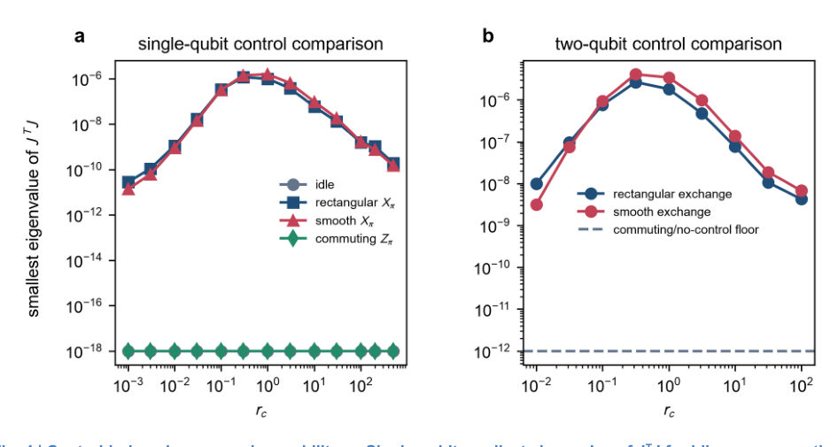
<figcaption class="paper-figure-caption"><b>Fig 5.</b> Fig. 5 | Gate-duration scaling and direct exact-OU validation. a, Dashed curves are peak-normalized interpolants for 𝑿𝝅 gates with 𝒕𝒈=0.5, 1 and 2; markers with Monte Carlo standard errors are new direct physical-parameter</figcaption>
</figure>
</div>

<p><strong>Summary.</strong> This paper develops a theoretical framework to probe environmental memory in quantum systems using coherent control. By analyzing the process map's dependence on noise correlation time ($    au_c$) versus gate duration ($t_g$), the authors identify a 'memory-information window.' This window shows that optimal noise characterization occurs when the environmental and control timescales are comparable.</p>
<p><strong>Why it may be interesting.</strong> This work provides a concrete, measurable principle—the timescale-matching principle—for designing quantum experiments to characterize complex, realistic noise environments beyond simple Markovian assumptions.</p>
<details>
<summary>Detailed structure</summary>
<p><strong>Main problem.</strong> The paper investigates how the finite correlation time of environmental noise (non-Markovianity) can be experimentally detected using coherent quantum control protocols.</p>
<p><strong>Main result.</strong> The ability to extract information about the noise correlation time is maximized when the environmental and control timescales are comparable, defining a 'memory-information window.'</p>
<p><strong>Method.</strong> The authors use exact stochastic trajectory calculations and analyze the parameter identifiability of the quantum process map by examining the Jacobian matrix of the process evolution.</p>
<p><strong>Model / system.</strong> The system involves quantum control operations (e.g., single-qubit rotations, two-qubit gates) subjected to non-Markovian environmental noise, modeled using the Ornstein-Uhlenbeck process.</p>
<p><strong>Key observables.</strong> Process map elements, Pauli-transfer matrix (PTM) elements, and the smallest singular value of the process Jacobian.</p>
<p><strong>Important parameters / regimes.</strong> Noise variance ($\sigma^2$), correlation time ($   au_c$), and gate duration ($t_g$), analyzed via the dimensionless ratio $    au_c/t_g$.</p>
<p><strong>Assumptions / limitations.</strong> The noise is modeled as Gaussian noise with a finite correlation time, and the analysis relies on the concept of independent parameter identifiability.</p>
<p><strong>Figures summary.</strong> Figures illustrate the time-ordered dressing of stochastic interactions, showing the memory-information window, and comparing information observability for different control types (commuting vs. noncommuting).</p>
<p><strong>Paper structure.</strong> The paper develops the theoretical framework for noise-induced process evolution, analyzes the short-memory and long-memory limits, and uses stochastic simulations to pinpoint the optimal timescale matching for information extraction.</p>
</details>
<details>
<summary>Abstract</summary>
<p>Environmental noise is a major source of decoherence and errors in quantum systems. In a non-Markovian environment, the noise has a finite correlation time, and the system can retain information about its previous interactions with the environment. Here, we investigate how such environmental memory can be observed through a finite-duration coherent quantum operation. Coherent control dynamically reshapes the stochastic coupling operator and thereby changes how two-time noise correlations affect the quantum process. For Ornstein-Uhlenbeck noise, we show analytically that two different limits reduce the information on the correlation time. In the short-memory limit, the leading dynamics depend on the integrated-noise combination σ/τc, where σ is the noise variance and τc is the correlation time, making these parameters locally degenerate. In the long-memory limit, the stochastic field becomes quasi-static during the operation, and sensitivity to the correlation time is suppressed. Exact stochastic simulations for a driven single-qubit Xπ rotation and a two-qubit exchange gate show that independent correlation-time information becomes largest between these limits, when the environmental and control timescales are comparable. Noncommuting controls enhance this information, whereas commuting controls do not. Simulations at different gate durations tg further show that the information window approximately follows the dimensionless correlation ratio τc/tg. These results provide a timescale-matching principle for probing finite-correlation non-Markovian noise with coherent quantum control.</p>
</details>
<p><sub><a href="#top">↑ back to top</a></sub></p>

<p><a id="paper-2609.21944"></a></p>
<h3 id="guiding-agents-of-quantum-games-to-equilibrium-using-matrix-exponential-fixed-point-iteration"><a href="http://arxiv.org/abs/2609.21944v1">Guiding Agents of Quantum Games to Equilibrium using Matrix Exponential Fixed-Point Iteration</a></h3>
<p><strong>Authors:</strong> Alireza Habibi, Luis F. Abanto Leon, Setareh Maghsudi<br>
<strong>Type:</strong> theory · <strong>Category:</strong> other · <strong>PDF:</strong> <a href="https://arxiv.org/pdf/2609.21944v1">https://arxiv.org/pdf/2609.21944v1</a><br>
<strong>Analysis basis:</strong> full PDF text, analyzed in chunks
<strong>Topic relevance:</strong> <code>methods for driven-dissipative</code> <strong>3/5</strong> · <code>Keldysh / 2PI / non-Gaussian methods</code> <strong>1/5</strong> · <code>analog quantum simulation</code> <strong>1/5</strong> · <code>driven-dissipative phase transition</code> <strong>1/5</strong> · <code>non-equilibrium universality</code> <strong>1/5</strong> · <code>quantum measurements</code> <strong>1/5</strong></p>
<div class="figure-strip-hint">↔ Scroll figures horizontally</div>
<div class="paper-figures-scroll">
<figure class="paper-figure-card">
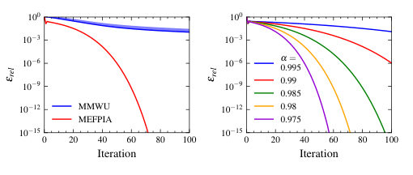
<figcaption class="paper-figure-caption"><b>Fig 1.</b> Fig. 1. Relative error for mini-experiment 1 (left) MMWU (γ = 0.05) and MEFPIA (T0 = 1, α = 0.98) (right) MEFPIA with T0 = 1 with different cooling rates.</figcaption>
</figure>
<figure class="paper-figure-card">
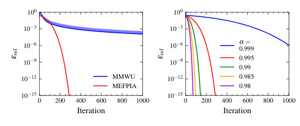
<figcaption class="paper-figure-caption"><b>Fig 2.</b> Fig. 2. Relative error for mini-experiment 2. (left) MMWU (γ = 0.05) and MEFPIA (T0 = 1, α = 0.995) (right) MEFPIA with T0 = 1 with different cooling rates.</figcaption>
</figure>
<figure class="paper-figure-card">
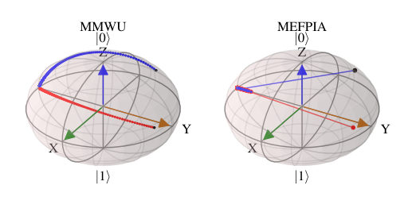
<figcaption class="paper-figure-caption"><b>Fig 3.</b> Fig. 3. Bloch sphere for Prisoner’s Dilemma quantum game with non- entangled outcome. Player 1 is represented by blue color, and player 2 by red color. (left) MMWU (γ = 0.05) and (right) MEFPIA (T0 = 1, α = 0.99)</figcaption>
</figure>
<figure class="paper-figure-card">
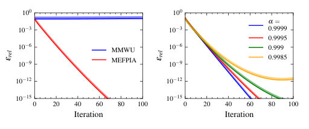
<figcaption class="paper-figure-caption"><b>Fig 4.</b> Fig. 4. Relative error for mini-experiment 3 with entangled outcomes. (left) MMWU (γ = 0.01) and MEFPIA (T0 = 3, α = 0.9995) (right) MEFPIA with T0 = 3 with different values for cooling rate.</figcaption>
</figure>
<figure class="paper-figure-card">
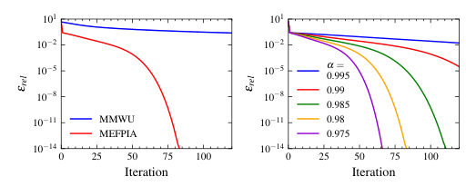
<figcaption class="paper-figure-caption"><b>Fig 5.</b> Fig. 5. Relative error for Experiment 2 with separable outcomes and large system. (left) MMWU (γ = 0.01) and MEFPIA (T0 = 1, α = 0.98) (right) MEFPIA with T0 = 1 with different cooling rates.</figcaption>
</figure>
</div>

<p><strong>Summary.</strong> This paper tackles the computational bottleneck in quantum game theory by developing tensor-contraction methods to handle large joint Hilbert spaces. It introduces the MEFPIA algorithm, a novel fixed-point iteration technique, which successfully finds quantum game equilibria with superior convergence compared to established methods. This provides a powerful tool for analyzing complex decision-making processes in quantum multi-agent systems.</p>
<p><strong>Why it may be interesting.</strong> While the core topic is game theory, the reliance on density matrices, entropy, and fixed-point iteration connects to concepts in open quantum systems and non-equilibrium dynamics.</p>
<details>
<summary>Detailed structure</summary>
<p><strong>Main problem.</strong> The primary challenge addressed is the computational difficulty of finding equilibrium strategies in multi-agent quantum games due to the exponential growth of the joint Hilbert space dimension.</p>
<p><strong>Main result.</strong> The proposed Matrix Exponential Fixed-Point Iteration with Annealing (MEFPIA) algorithm is shown to be a promising and efficient numerical method for searching for these equilibrium points, achieving lower error in fewer steps than existing methods.</p>
<p><strong>Method.</strong> The authors derive tensor-contraction expressions for payoff functions and gradients to circumvent explicit construction of the full joint density matrix, and then apply the MEFPIA algorithm.</p>
<p><strong>Model / system.</strong> The study focuses on the Extended Gutoski-Watrous (EGW) game, where players' quantum strategies are modeled by local density matrices ($
ho$). The system is defined on a joint Hilbert space $H = igotimes_{i=1}^N H(i)$.</p>
<p><strong>Key observables.</strong> Payoff functions, gradients, relative payoff error, and convergence rate.</p>
<p><strong>Important parameters / regimes.</strong> Temperature ($T$) used in the annealing process, and the local dimensions of the players' Hilbert spaces.</p>
<p><strong>Assumptions / limitations.</strong> The analysis relies on simplifying the calculation of traces and gradients using tensor contraction rules to manage computational complexity.</p>
<p><strong>Paper structure.</strong> The paper builds from the theoretical framework of quantum game theory, details the computational simplification using tensor contractions, proposes the MEFPIA algorithm, and compares its performance against the MMWU algorithm.</p>
</details>
<details>
<summary>Abstract</summary>
<p>In recent years, quantum game theory has gained significant attention as a framework for studying decision-making in multi-agent systems using quantum principles. However, computing equilibrium strategies is challenging because the dimension of the joint Hilbert space grows as the product of the players' local dimensions. In this paper, we consider an extended Gutoski-Watrous (EGW) game in which each player's quantum strategy is represented by a local density matrix. We derive tensor-contraction expressions for the payoff functions and their gradients, thereby avoiding the explicit construction of the full joint density matrix and its computationally expensive multiplication by the payoff operators. Building on the resulting effective Hamiltonians, we propose the Matrix Exponential Fixed-Point Iteration with Annealing (MEFPIA) algorithm to search for equilibrium points in EGW games. We compare MEFPIA with the Matrix Multiplicative Weights Update (MMWU) algorithm in terms of convergence. For the tested instances and parameter settings, both algorithms approach the same strategy profiles and payoffs, while MEFPIA achieves lower relative error in fewer iterations. These results indicate that MEFPIA is a promising numerical method for equilibrium search in multi-agent quantum games. Our findings provide important insights into the quantum game theory's potential for addressing complex decision-making processes, as well as opening up new paths for future research and exploration in multi-agent quantum systems.</p>
</details>
<p><sub><a href="#top">↑ back to top</a></sub></p>

<p><a id="paper-2609.21501"></a></p>
<h3 id="optimal-control-for-duty-cycle-limited-interferometry-with-single-nv-centers"><a href="http://arxiv.org/abs/2609.21501v1">Optimal control for duty-cycle-limited interferometry with single-NV centers</a></h3>
<p><strong>Authors:</strong> Ugur Tamer, Sina Zeytinoglu, Ozgur E. Mustecaplioglu<br>
<strong>Type:</strong> theory · <strong>Category:</strong> other · <strong>PDF:</strong> <a href="https://arxiv.org/pdf/2609.21501v1">https://arxiv.org/pdf/2609.21501v1</a><br>
<strong>Analysis basis:</strong> full PDF text, analyzed in chunks
<strong>Topic relevance:</strong> <code>quantum measurements</code> <strong>3/5</strong> · <code>QC/QI experiment</code> <strong>2/5</strong> · <code>methods for driven-dissipative</code> <strong>2/5</strong> · <code>driven-dissipative phase transition</code> <strong>1/5</strong></p>
<div class="figure-strip-hint">↔ Scroll figures horizontally</div>
<div class="paper-figures-scroll">
<figure class="paper-figure-card">
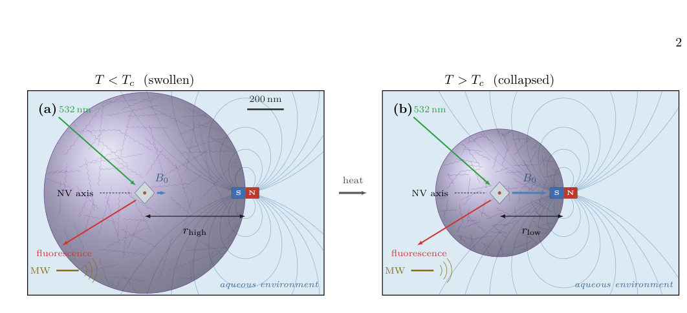
<figcaption class="paper-figure-caption"><b>Fig 1.</b> FIG. 1. Schematic of the hydrogel-transduced single-NV sensor in its two limiting states. (a) Below the critical temperature the polymer network is hydrated and swollen, holding the surface-bound nanomagnet at a separation rhigh from the NV center in the nanodiamond. (b) Heating through the volume phase transition collapses the network to rlow, which brings the magnet closer and raises the dipolar field at the NV as r−3 following Eqs. (2) and (3); for the radii used here this is a 3.9-fold enhancement. The magnetic moment lies along the NV–magnet separation vector, so B0 is parallel to the NV symmetry axis and Eq. (1) applies with no projection factor. Green and red arrows mark optical...</figcaption>
</figure>
<figure class="paper-figure-card">
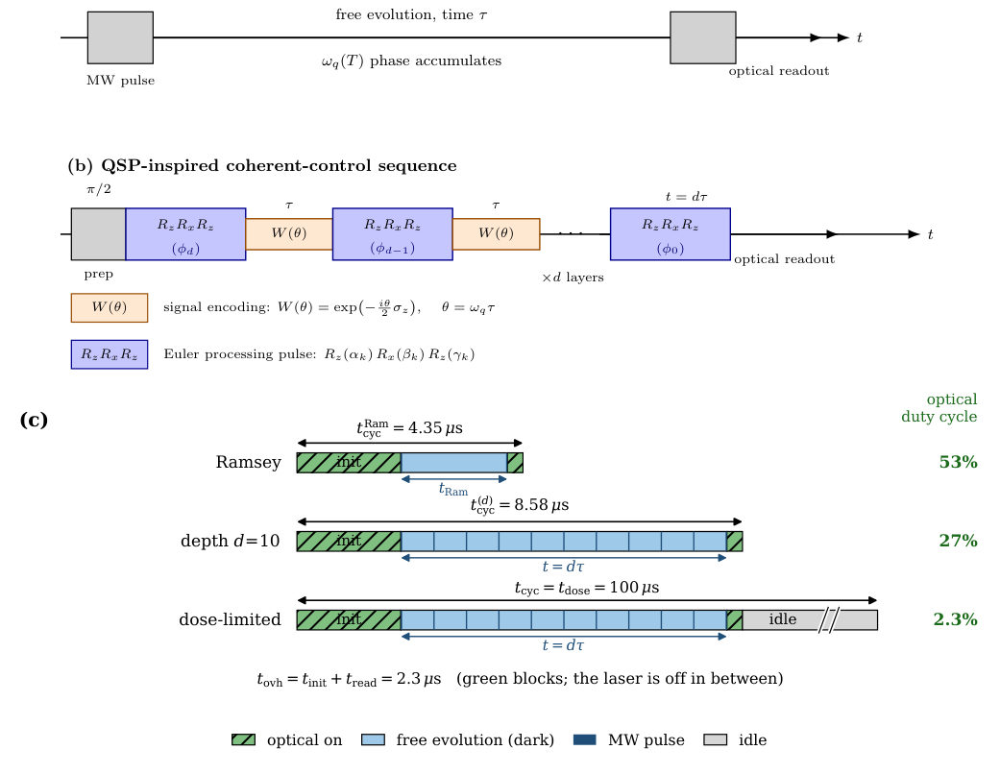
<figcaption class="paper-figure-caption"><b>Fig 2.</b> FIG. 2. Pulse sequences and the measurement cycle. (a) Ramsey protocol: an initial π/2 pulse, free evolution under ωq(T) for time τ, and a final π/2 readout pulse. (b) Coherent-control protocol following Eq. (7): Euler processing pulses Rz(αk)Rx(βk)Rz(γk) interleaved with free-evolution blocks W(θ), proceeding from ϕd down to ϕ0, giving a total interrogation time t = dτ. (c) One full experimental cycle for both protocols, drawn to scale with tinit = 2.0 µs, tread = 0.3 µs and tp = 25 ns for the illustrated π/2 pulses; the rate calculations below conservatively assign tp = 50 ns to each processing block unless stated otherwise. Optical excitation enters only through initialization and...</figcaption>
</figure>
<figure class="paper-figure-card">
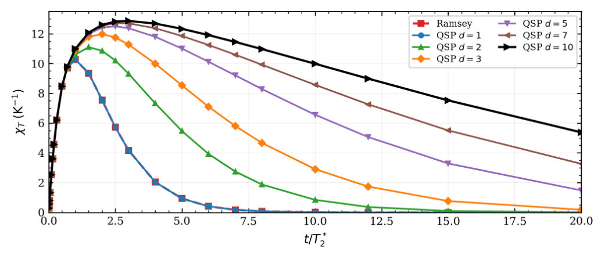
<figcaption class="paper-figure-caption"><b>Fig 3.</b> FIG. 3. Thermal spin susceptibility χT = |∂T ⟨σz⟩| as a function of normalized interrogation time t/T ∗ 2 for phase-optimized Ramsey (red squares) and QSP-inspired coherent-control sequences with d = 1, 2, 3, 5, 7, 10 layers (circles). The controlled response increases with depth and shifts to longer nominal interrogation time, reaching a finite-depth ceiling near 13 K−1. The large equal-time separation at long times is interpreted in Sec. IV H through the optimized state trajectory. All simulations use the full Lindblad master equation at T = 305.0 K.</figcaption>
</figure>
<figure class="paper-figure-card">
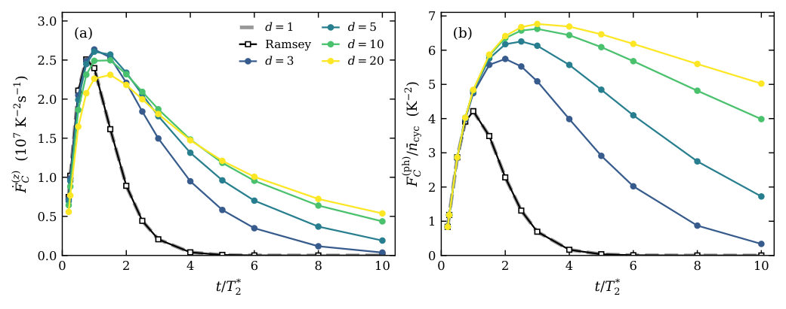
<figcaption class="paper-figure-caption"><b>Fig 4.</b> FIG. 4. (a) Binary Fisher-information rate ˙F (z) C and (b) photon-normalized Fisher information F (ph) C /¯ncyc for Ramsey and QSP-inspired coherent-control sequences. The d = 1 sequence reproduces the Ramsey baseline; the two are drawn separately for visibility. Panel (a) includes the finite pulse duration tp = 50 ns through the cycle time of Eqs. (14)–(15), while panel (b) shows the per-detected-photon gain. Both axes are linear, so the comparison that matters operationally is visible directly: every protocol peaks at nearly the same rate, within 8% of Ramsey, and the depth only moves where that peak sits. The long-time separation is a decay of the Ramsey reference, not a rate advantage.</figcaption>
</figure>
<figure class="paper-figure-card">
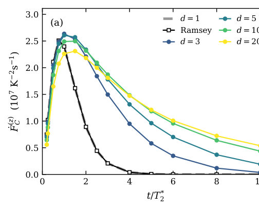
<figcaption class="paper-figure-caption"><b>Fig 5.</b> Figure 4(b) shows the photon-normalized Fisher infor- mation of Eq. (24). Because the optimum lies at z ≃0 for both protocols, ¯n is common to the two, and Eq. (23) then gives F (ph) C /¯n ∝(∂T z)2, so Eq. (28) applies. The photon-budget result restates the per-shot gain: the se- quence realizes it at the same detected-photon budget per shot, so the gain carries over one-to-one into information per detected photon. This photon-budget result belongs to the pulsed single- NV model. The control gain is obtained at the same detected-photon budget per shot as optimized Ramsey.</figcaption>
</figure>
</div>

<p><strong>Summary.</strong> This paper develops an optimal control strategy for enhancing temperature sensing using single NV centers coupled to hydrogels. By implementing QSP-inspired coherent control sequences, the authors demonstrate a significant gain in measurement sensitivity (up to 60% in Fisher information) compared to standard Ramsey methods. This shows that optimizing the measurement sequence, rather than just the physical setup, is crucial for high-performance quantum sensing in practical settings.</p>
<p><strong>Why it may be interesting.</strong> This work directly addresses the optimization of quantum sensing protocols in realistic, resource-constrained environments (like biosensing), providing quantitative gains by optimizing the measurement sequence itself.</p>
<details>
<summary>Detailed structure</summary>
<p><strong>Main problem.</strong> The paper aims to improve the sensitivity of temperature measurements using single Nitrogen-Vacancy (NV) centers in hydrogels, particularly when the measurement is limited by the duty cycle.</p>
<p><strong>Main result.</strong> The authors achieved a reproducible 25–27% per-shot sensitivity gain over optimized Ramsey interrogation, corresponding to a 57–60% gain in Fisher information.</p>
<p><strong>Method.</strong> They employed quantum control techniques, specifically QSP-inspired coherent control, applied to a pulsed single-NV measurement sequence.</p>
<p><strong>Model / system.</strong> The system involves single NV centers coupled to stimulus-responsive hydrogels, which transduce temperature changes into magnetic field shifts. The physics is modeled using a sigmoidal volume-phase-transition model and simulated via Lindblad master equations.</p>
<p><strong>Key observables.</strong> Per-shot sensitivity gain, Fisher information gain, and the rate gain governed by the measurement duty cycle.</p>
<p><strong>Important parameters / regimes.</strong> The advantage is most pronounced when the dephasing time ($T_2$) is short compared with the measurement overhead or dose-limited waiting time.</p>
<p><strong>Assumptions / limitations.</strong> The analysis assumes a point-dipole magnetic field and that the primary decoherence mechanism is dephasing ($\sigma_z$).</p>
<p><strong>Figures summary.</strong> Figures illustrate the schematic of the sensor (hydrogel states), the comparison of signal envelopes (calibrated vs. uncalibrated), and global gain maps showing the dependence on control depth and time.</p>
<p><strong>Paper structure.</strong> The paper develops the theoretical framework by modeling the temperature-to-field transduction, comparing standard Ramsey interrogation against optimized coherent control protocols, and deriving the resulting sensitivity gains.</p>
</details>
<details>
<summary>Abstract</summary>
<p>Stimulus-responsive hydrogels convert temperature changes into magnetic-field shifts detectable by nitrogen-vacancy (NV) centers, enabling nanoscale thermometry in soft and biological environments. Existing hydrogel-nanodiamond demonstrations rely on NV ensembles, whose high photon throughput is accompanied by gradient-induced inhomogeneous broadening, while idealized single-NV projections assume high-fluence fluorescence/ODMR readout. Here we study a pulsed single-NV route for the same class of sensors and ask whether decoherence-aware coherent control can improve thermometric performance over optimized Ramsey interrogation at equal detected-photon budget. Using a sigmoidal volume-phase-transition model, dipolar magnetic transduction, and Lindblad master-equation simulations, we find a reproducible 25-27% per-shot sensitivity gain over optimized Ramsey, i.e., a 57-60% gain in Fisher information (1.57-1.60). The same gain carries over to the photon-normalized Fisher information. The rate gain is governed by the measurement duty cycle, the fraction of the experimental cycle spent accumulating signal rather than initializing, reading out or waiting, and becomes largest when the overhead or optical-dose constraint dominates the cycle time. The optimized trajectories reveal a response-shaping mechanism in which phase accumulation is concentrated near the end of the sequence, and a closed-form depth-two solution reproduces the numerical optimum and exhibits that mechanism analytically. The advantage is most pronounced when the dephasing time is short compared with the measurement overhead or dose-limited waiting time, which is the operating regime targeted by hydrogel-transduced single-spin biosensing.</p>
</details>
<p><sub><a href="#top">↑ back to top</a></sub></p>

<p><a id="paper-2609.21961"></a></p>
<h3 id="single-atom-based-asynchronous-photonic-interconnect-for-scalable-modular-quantum-computing"><a href="http://arxiv.org/abs/2609.21961v1">Single-atom-based asynchronous photonic interconnect for scalable modular quantum computing</a></h3>
<p><strong>Authors:</strong> Jérémy Raskop, Nadav Kandel, Yaniv Amichy, Yaron Jarach, Tal Kanonich, Andrei Militaru, Johannes Fink, Barak Dayan<br>
<strong>Type:</strong> theory · <strong>Category:</strong> quantum information and computing · <strong>PDF:</strong> <a href="https://arxiv.org/pdf/2609.21961v1">https://arxiv.org/pdf/2609.21961v1</a><br>
<strong>Analysis basis:</strong> full PDF text, analyzed in chunks
<strong>Topic relevance:</strong> <code>Tavis-Cummings &amp; cavity-many-emitter</code> <strong>3/5</strong> · <code>analog quantum simulation</code> <strong>2/5</strong> · <code>quantum measurements</code> <strong>2/5</strong> · <code>correlated / nonlocal dissipation</code> <strong>1/5</strong></p>
<div class="figure-strip-hint">↔ Scroll figures horizontally</div>
<div class="paper-figures-scroll">
<figure class="paper-figure-card">
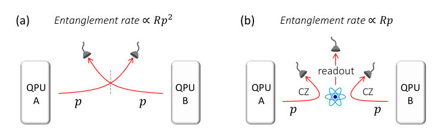
<figcaption class="paper-figure-caption"><b>Fig 1.</b> Fig 1 Scaling of the entanglement rate. (a) In conventional type-II fusion, quantum processing units A and B must each successfully deliver a photon in the same attempt. If each does so with probability p at attempt rate R, the entanglement rate scales as Rp2. (b) Using a photon–atom controlled-Z gate, a midpoint atomic qubit memory preserves the entanglement established by whichever photon arrives first while the other QPU continues attempting. If the system coherence time allows a sufficiently long waiting window, the same-attempt requirement is removed and the entanglement rate approaches the linear scaling Rp.</figcaption>
</figure>
<figure class="paper-figure-card">
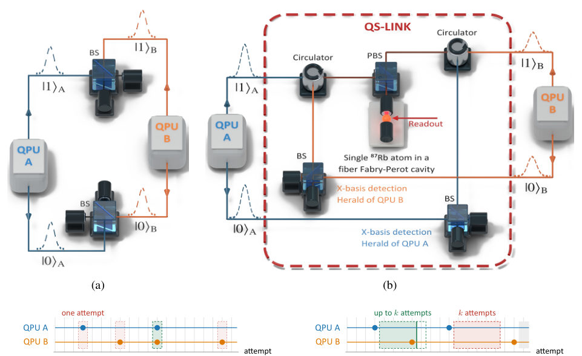
<figcaption class="paper-figure-caption"><b>Fig 2.</b> Fig 2 Type-II fusion and atomic-qubit-based Bell-state measurements. (a) Linear-optics BSM. Photons from both QPUs must arrive at the interconnect in the same attempt. (b) Memory-assisted atom–cavity BSM. For each photon, the |0p⟩rail bypasses the cavity, while the |1p⟩rail is reflected from it and acquires an atom-state-dependent phase, implementing the controlled-Z gate. A circulator directs the reflected rail to a balanced beam splitter, where it interferes with the bypassed rail. Detection at either output supplies the herald, and the output port identifies the X- basis outcome. Atomic read-out completes the BSM after a photon from each QPU has been detected and measured. (c) Example...</figcaption>
</figure>
<figure class="paper-figure-card">
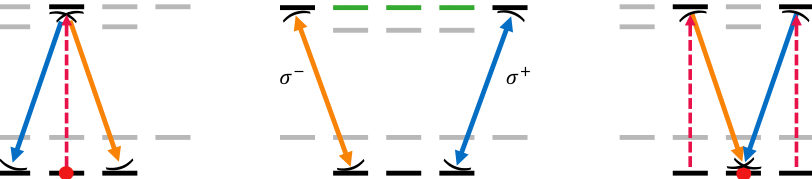
<figcaption class="paper-figure-caption"><b>Fig 3.</b> Fig 3 Atomic transitions used by the cavity-QED memory. (a) Preparation. A π-polarized pulse (dashed red) excites the atom from the |F = 1, mF = 0⟩ground state. Subsequent decay through the cavity-enhanced σ−and σ+ channels (orange and blue, respectively) prepares the atomic qubit in a superposition of |0a⟩and |1a⟩. (b) CZ gate. The two atomic qubit states couple to separate excited states through the cavity-enhanced σ−and σ+ transitions. A resonant 1324 nm level-engineering field (green) dresses the central |F ′ = 2, mF = 0⟩excited state, suppressing unwanted transitions through it and enabling the atomic-state-dependent cavity response required for the gate. (c) Read-out. A π-polarized...</figcaption>
</figure>
<figure class="paper-figure-card">
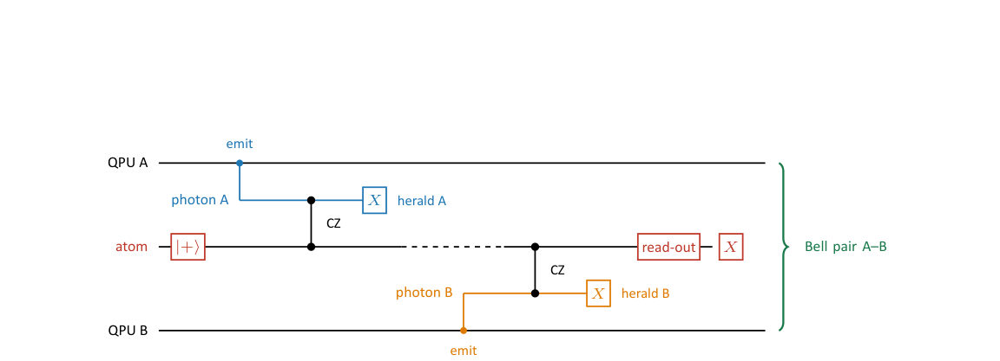
<figcaption class="paper-figure-caption"><b>Fig 4.</b> Fig 4 Circuit representation of the atom-mediated Bell-state measurement. The two photon–atom CZ gates and photonic X-basis measurements establish the two heralds. The dashed portion of the atomic line denotes storage between them, and atomic read-out completes the BSM.</figcaption>
</figure>
<figure class="paper-figure-card">
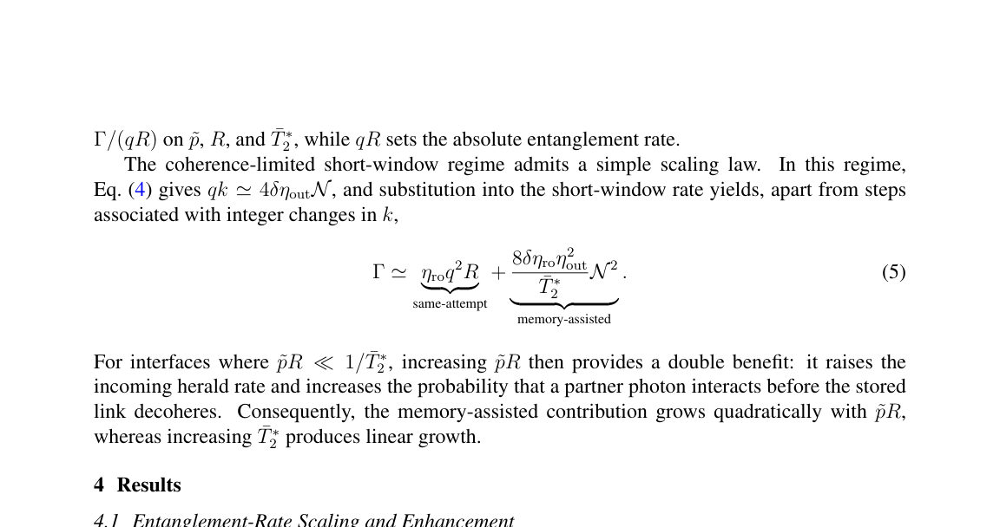
<figcaption class="paper-figure-caption"><b>Fig 5.</b> Figure 5 summarizes how the entanglement rate of the memory-assisted interconnect depends on N and ˜pR, together with its gain over type-II fusion. Panel (a) shows the entanglement rate normal- ized by the per-QPU herald rate, Γ/(qR). At small N, the infidelity budget permits no additional attempt, so k = 0 and only same-attempt heralds contribute. As additional attempts become admis- sible, the memory-assisted contribution grows and the curves for different ˜p gradually converge. At large N, unheralded photon interactions limit the waiting-window length, and the normalized rate approaches a plateau below the unbounded-window limit. For comparison, the entanglement rate for type-II fusion is</figcaption>
</figure>
</div>

<p><strong>Summary.</strong> This paper proposes a memory-assisted quantum interconnect using a trapped atom in a cavity to link modular quantum processors. By allowing photons to arrive sequentially rather than simultaneously, the protocol achieves a linear scaling of the entanglement rate, dramatically improving scalability over existing quadratic-scaling methods. This breakthrough removes a major bottleneck for building large-scale quantum computers.</p>
<p><strong>Why it may be interesting.</strong> This work directly addresses a core bottleneck in quantum networking by providing a theoretically derived, high-rate protocol that circumvents the quadratic scaling limitations inherent in standard linear-optics entanglement distribution.</p>
<details>
<summary>Detailed structure</summary>
<p><strong>Main problem.</strong> Scaling quantum computation requires robust quantum interconnects to distribute entanglement between modular quantum processing units (QPUs).</p>
<p><strong>Main result.</strong> The proposed memory-assisted interconnect achieves an entanglement rate scaling linearly ($\propto p$) with photon probability, offering orders-of-magnitude improvement over the quadratic scaling ($\propto p^2$) of conventional linear-optics methods.</p>
<p><strong>Method.</strong> The method utilizes a memory-assisted Bell-State Measurement (BSM) mediated by a single trapped atom in a cavity, allowing for sequential photon detection rather than simultaneous arrival.</p>
<p><strong>Model / system.</strong> The system involves single trapped neutral atoms (e.g., Rb) coupled to a high-finesse cavity, implementing photon-atom controlled-Z (CZ) gates. The analysis models the rate by accounting for sequential photon interactions and decoherence.</p>
<p><strong>Key observables.</strong> Entanglement rate ($\Gamma$), infidelity ($\delta_{tot}$), and the scaling dependence on photon delivery probability ($p$).</p>
<p><strong>Important parameters / regimes.</strong> Photon delivery probability ($p$), cavity cooperativity ($C$), coherence time ($ar{T}^*$), and the total infidelity budget ($\delta$).</p>
<p><strong>Assumptions / limitations.</strong> The protocol assumes the memory coherence time is long enough to allow for sequential photon arrivals, and the analysis models the total infidelity as a sum of added noise and memory errors.</p>
<p><strong>Figures summary.</strong> Figures compare entanglement rate scaling ($\propto p^2$ vs. $\propto p$), illustrate the sequential vs. simultaneous arrival process, and show trade-offs between rate and pump power/noise.</p>
<p><strong>Paper structure.</strong> The paper first establishes the limitation of quadratic scaling in standard interconnects. It then details the memory-assisted protocol using sequential CZ gates. The latter sections focus on rigorous rate derivations, modeling the total infidelity budget, and optimizing operational parameters based on noise trade-offs.</p>
</details>
<details>
<summary>Abstract</summary>
<p>Scaling quantum computation beyond the capacity of a single quantum processing unit requires quantum interconnects between modular processors. Optical photons are natural carriers for distributing entanglement between these processors. Most loss-resilient protocols use photonic Bell-state measurements based on the linear-optics type-II fusion gate. The resulting entanglement rate scales quadratically with each processor's typically low photon-delivery probability. Here we analyze a memory-assisted quantum interconnect using a near-deterministic, robust photon--atom controlled-$Z$ gate via a single atom trapped in a high-finesse cavity. Detecting and measuring a photon from one processor heralds entanglement between that processor and the atom. This entanglement is preserved while the process repeats with the second processor until the second photon is detected and measured. Reading out the atomic qubit finalizes the entanglement between the processors. As the entanglement is mediated by the atom, the photons from both processors do not need to be indistinguishable, removing a major source of infidelity. Furthermore, by removing the simultaneous photon-arrival requirement, the protocol allows the entanglement rate to scale linearly rather than quadratically with photon-arrival probability over a wide parameter range. We derive entanglement rates under realistic parameters, accounting for decay of the atom's entanglement with the first processor and for decoherence caused by unheralded photon interactions. The nanosecond-scale of the gate and read-out operations leads to orders-of-magnitude entanglement-rate gain over linear optics, removing a key bottleneck in modular quantum computing.</p>
</details>
<p><sub><a href="#top">↑ back to top</a></sub></p>

<p><a id="paper-2609.21585"></a></p>
<h3 id="exact-dewitt-kernels-in-lorentzian-quantum-cosmology"><a href="http://arxiv.org/abs/2609.21585v1">Exact DeWitt kernels in Lorentzian quantum cosmology</a></h3>
<p><strong>Authors:</strong> Hiroki Matsui<br>
<strong>Type:</strong> theory · <strong>Category:</strong> other · <strong>PDF:</strong> <a href="https://arxiv.org/pdf/2609.21585v1">https://arxiv.org/pdf/2609.21585v1</a><br>
<strong>Analysis basis:</strong> full PDF text, analyzed in chunks
<strong>Topic relevance:</strong> <code>Keldysh / 2PI / non-Gaussian methods</code> <strong>3/5</strong> · <code>methods for driven-dissipative</code> <strong>2/5</strong> · <code>quantum measurements</code> <strong>2/5</strong></p>
<div class="figure-strip-hint">↔ Scroll figures horizontally</div>
<div class="paper-figures-scroll">
<figure class="paper-figure-card">
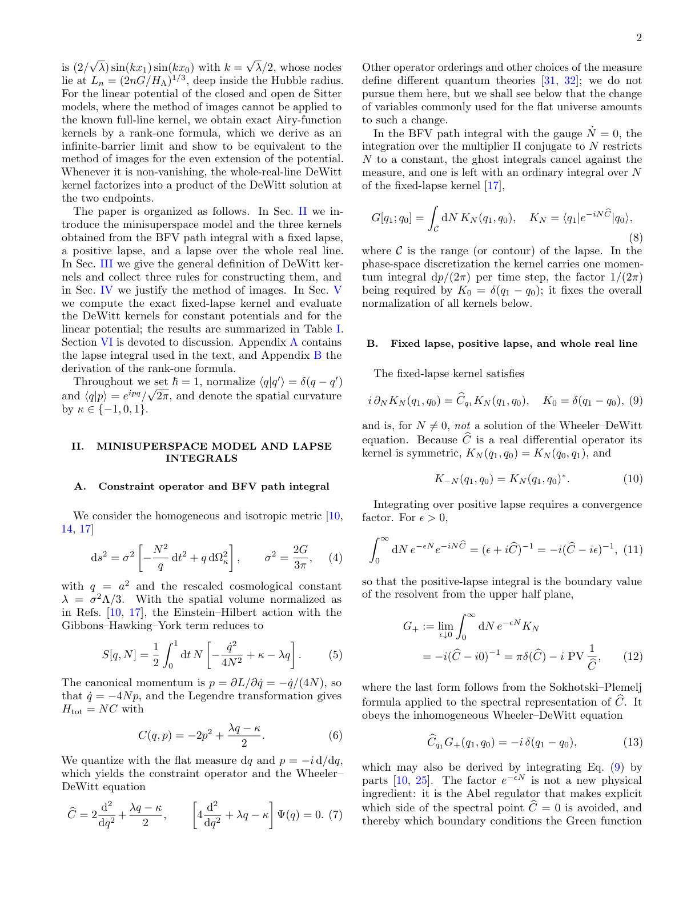
<figcaption class="paper-figure-caption"><b>Fig 1.</b> Low-resolution page preview, page 2</figcaption>
</figure>
<figure class="paper-figure-card">
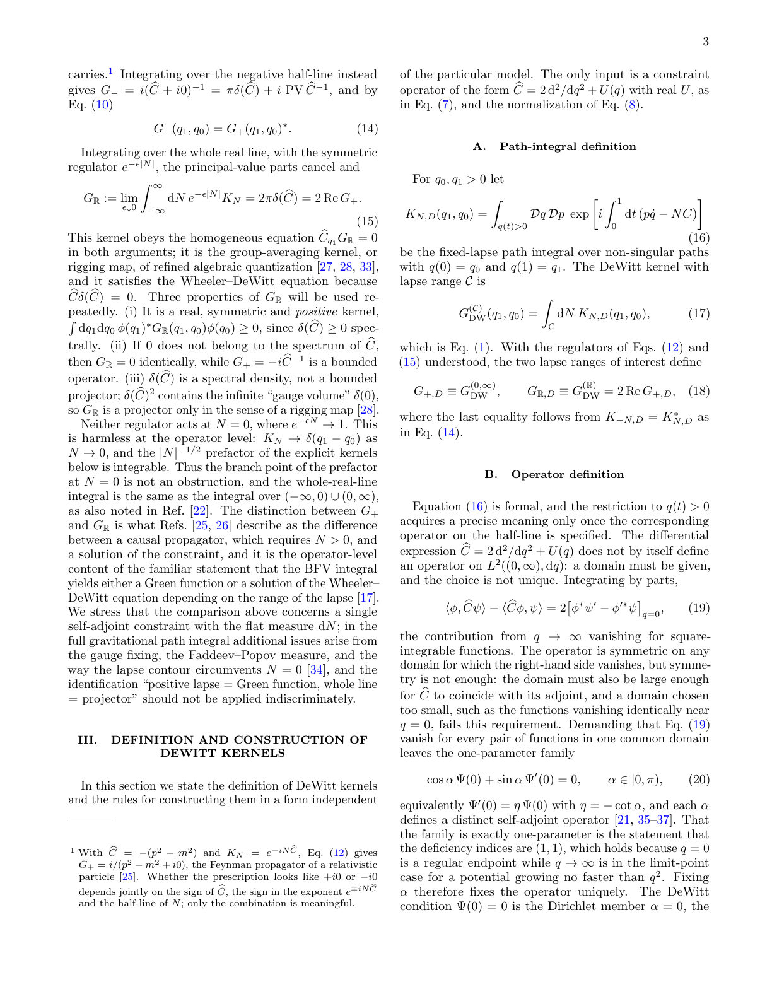
<figcaption class="paper-figure-caption"><b>Fig 2.</b> Low-resolution page preview, page 3</figcaption>
</figure>
<figure class="paper-figure-card">
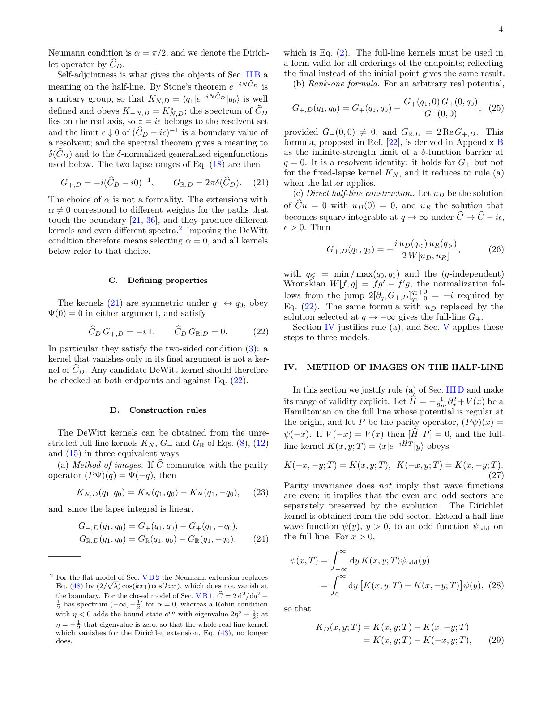
<figcaption class="paper-figure-caption"><b>Fig 3.</b> Low-resolution page preview, page 4</figcaption>
</figure>
<figure class="paper-figure-card">
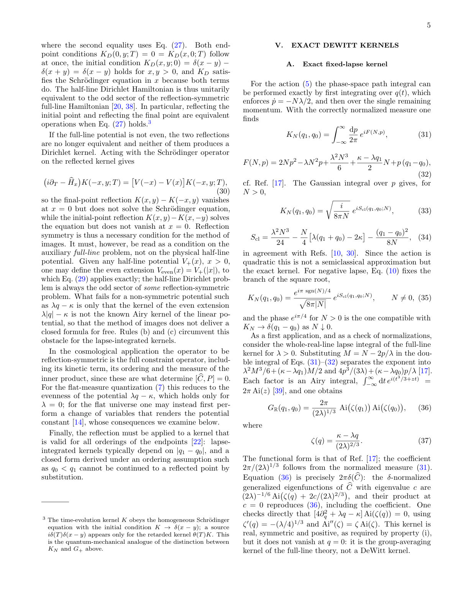
<figcaption class="paper-figure-caption"><b>Fig 4.</b> Low-resolution page preview, page 5</figcaption>
</figure>
<figure class="paper-figure-card">
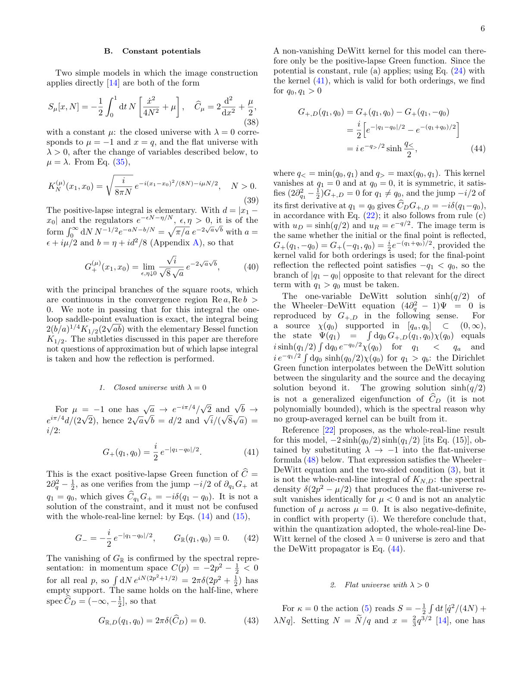
<figcaption class="paper-figure-caption"><b>Fig 5.</b> Low-resolution page preview, page 6</figcaption>
</figure>
</div>

<p><strong>Summary.</strong> This paper provides a rigorous, exact calculation of DeWitt kernels for quantum cosmology by implementing the DeWitt boundary condition in the Lorentzian path integral. It establishes general construction rules and derives explicit kernel forms for various cosmological models, confirming the consistency between different mathematical approaches for defining quantum propagators in constrained systems.</p>
<p><strong>Why it may be interesting.</strong> While focused on cosmology, the rigorous mathematical techniques for defining propagators via path integrals over gauge degrees of freedom (the lapse $N$) and handling boundary conditions (like the Dirichlet condition) are highly relevant to open quantum systems and quantum field theory in curved spacetime.</p>
<details>
<summary>Detailed structure</summary>
<p><strong>Main problem.</strong> The paper addresses the technical challenge of correctly implementing the DeWitt boundary condition within the Lorentzian path integral formulation of minisuper-space quantum cosmology.</p>
<p><strong>Main result.</strong> The authors provide general definitions and exact construction rules for DeWitt kernels, yielding explicit, closed-form expressions for these kernels in various cosmological backgrounds (e.g., de Sitter space).</p>
<p><strong>Method.</strong> The methodology involves using the Batalin–Fradkin–Vilkovisky (BFV) path integral approach, analyzing lapse integrals over different contours (positive half-line vs. whole real line), and imposing the DeWitt condition as a boundary constraint.</p>
<p><strong>Model / system.</strong> The physical system is minisuper-space quantum cosmology, governed by a constraint operator derived from the metric $ds^2 = \sigma^2 (-N^2 q dt^2 + q d\Omega^2)$. The dynamics are described by the Wheeler–DeWitt equation.</p>
<p><strong>Key observables.</strong> The DeWitt kernels, specifically the positive-lapse kernel ($G^+$) and the whole-real-line kernel ($G_R$), are the primary observables.</p>
<p><strong>Important parameters / regimes.</strong> The cosmological constant ($\Lambda$), the scale factor variable ($q$), and the boundary condition parameter ($\alpha$) are key parameters.</p>
<p><strong>Assumptions / limitations.</strong> The analysis is restricted to a single self-adjoint constraint operator with the flat measure $dN$, neglecting full gauge fixing and Faddeev–Popov measures.</p>
<p><strong>Paper structure.</strong> The paper develops the general framework for constructing DeWitt kernels, derives specific forms for the positive-lapse and whole-real-line kernels, and then applies these general results to calculate exact kernels for specific cosmological models like the closed, flat, and open de Sitter universes.</p>
</details>
<details>
<summary>Abstract</summary>
<p>The DeWitt boundary condition can be implemented in the Lorentzian path integral of minisuperspace quantum cosmology by summing only over non-singular paths. We give a general definition of the resulting DeWitt kernels, together with explicit rules for constructing them, and evaluate them exactly. The lapse integral over the positive half-line yields the Dirichlet Green function of the Wheeler--DeWitt operator, whereas the integral over the whole real line yields the Dirichlet group-averaging kernel; both vanish when either endpoint lies at the singularity. Since the minisuperspace actions are at most quadratic, all lapse integrals are performed in closed form without saddle-point approximations. We obtain the kernels for the closed universe without cosmological constant, where the whole-real-line kernel vanishes identically, for the flat de Sitter universe, and, in terms of Airy functions, for the closed and open de Sitter universes. Throughout, the DeWitt condition is imposed as the boundary condition at the singularity, which selects a self-adjoint constraint operator on the half-line and fixes the kernels uniquely, including their normalization.</p>
</details>
<p><sub><a href="#top">↑ back to top</a></sub></p>

<p><a id="paper-2609.22002"></a></p>
<h3 id="microwave-dielectric-properties-of-linbomath134math-and-aln-at-millikelvin-temperatures-and-single-photon-power"><a href="http://arxiv.org/abs/2609.22002v1">Microwave dielectric properties of LiNbO$_{\mathbf{3}}$ and AlN at millikelvin temperatures and single-photon power</a></h3>
<p><strong>Authors:</strong> Alessandro Reineri, Francesco Crisa, Akshay Murthy, Maithlee Shinde, Daniel Bafia, Changqing Wang, Tanay Roy, Alexander Romanenko, John Zasadzinski, Anna Grassellino, Silvia Zorzetti<br>
<strong>Type:</strong> experiment · <strong>Category:</strong> quantum information and computing · <strong>PDF:</strong> <a href="https://arxiv.org/pdf/2609.22002v1">https://arxiv.org/pdf/2609.22002v1</a><br>
<strong>Analysis basis:</strong> full PDF text, analyzed in chunks
<strong>Topic relevance:</strong> <code>QC/QI experiment</code> <strong>3/5</strong> · <code>quantum optics experiment</code> <strong>2/5</strong> · <code>correlated / nonlocal dissipation</code> <strong>1/5</strong></p>
<div class="figure-strip-hint">↔ Scroll figures horizontally</div>
<div class="paper-figures-scroll">
<figure class="paper-figure-card">
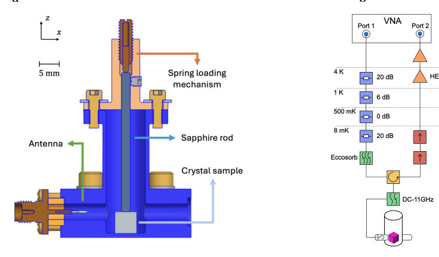
<figcaption class="paper-figure-caption"><b>Fig 1.</b> Figure 1: (a) CAD section of the cavity architecture in a one-port measurement configuration. The z-cut samples are aligned with the main cylinder’s axis so that the TM mode excites the ε∥ component of the dielectric tensor and the TE mode the ε⊥component. (b) One-port reflection setup wire diagram, showing the standard implementation of isolators and circulators to prevent noise leakage from the amplifier stages to reach back to the cavity. It is noted that the low-pass DC-11GHz filter was removed for the AlN TE011 mode, as it had a resonance frequency above 15 GHz [34]. (c) Field distribution vector heatmap of the TM010 and (d) TE011 modes in the cavity in presence of one of the...</figcaption>
</figure>
<figure class="paper-figure-card">
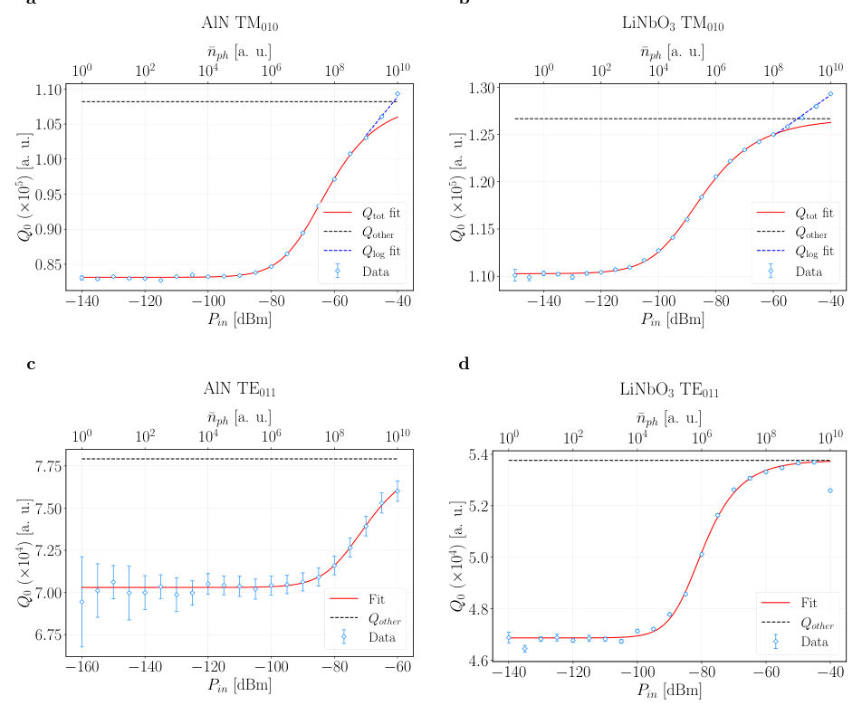
<figcaption class="paper-figure-caption"><b>Fig 2.</b> Figure 2: Power sweeps at base temperature of AlN and LiNbO3. (a) TM010 of AlN with TLS- logarithmic model fit–Eq. (4–3b). (b) TM010 of LiNbO3 with TLS-logarithmic model fit–Eq. (4–3b). (c) TE011 of AlN with TLS model fit, as in Eq. (4). (d) TE011 of LiNbO3 with TLS model fit, as in Eq. (4). The outlier is due to the HEMT gain compression, not fully mitigated by the decompression strategy implemented in the circle fit routine (see Supplementary Note 2). Error bars are related to regression to the circle fit model (Eq. 2) and depend on the signal-to-noise ratio of each single S11 trace.</figcaption>
</figure>
<figure class="paper-figure-card">
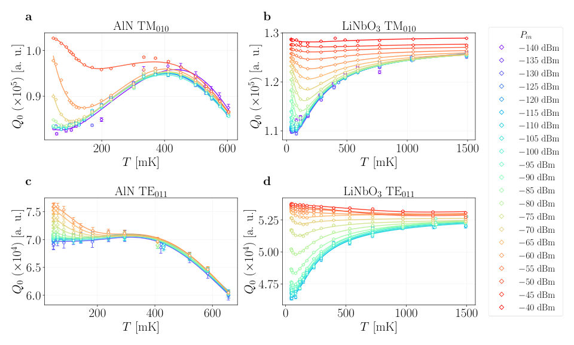
<figcaption class="paper-figure-caption"><b>Fig 3.</b> Figure 3: Samples TM010 (a)(b) and TE011 (c)(d) mode internal quality factor toward temperature measurements at different cavity input power and corresponding regressions to model in Eq. (5). In the case of AlN, the Q0 (¯n, T) curves show a distinct local/global maximum for the transverse magnetic resonance and an inflection point for the transverse electric one around T ≃400 mK, indicating a clear presence of non-negligible quasiparticle dissipation in the aluminum cavity walls at high temperatures. For LiNbO3, the absence of quasiparticle-related contribution in the Q0 (¯n, T) data series is consistent with the high critical temperature of the niobium cavity. The difference in high power...</figcaption>
</figure>
<figure class="paper-figure-card">
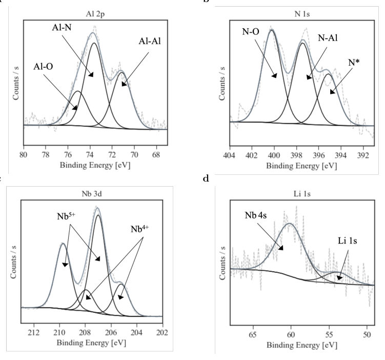
<figcaption class="paper-figure-caption"><b>Fig 4.</b> Figure 4: High resolution XPS of (a) Al 2p, and (b) N 1s of the AlN bulk crystal, and (c) Nb 3d and (d) Li 1s of the LiNbO3 bulk crystal. The solid and dashed gray lines represent the envelope and the raw spectrum, respectively.</figcaption>
</figure>
</div>

<p><strong>Summary.</strong> This experimental study characterizes the microwave dielectric losses in $ ext{LiNbO}_3$ and $ ext{AlN}$ crystals down to single-photon levels at millikelvin temperatures. By analyzing power and temperature dependencies, the authors determined that losses are primarily due to surface-localized Two-Level Systems (TLS), not intrinsic bulk properties. These findings provide crucial material science guidance for engineering high-efficiency quantum transduction interfaces.</p>
<p><strong>Why it may be interesting.</strong> This work directly addresses a critical hardware bottleneck—material loss—for scaling superconducting quantum processors into distributed quantum networks by characterizing electro-optic materials at the quantum limit.</p>
<details>
<summary>Detailed structure</summary>
<p><strong>Main problem.</strong> The study aims to characterize the microwave dielectric properties of $   ext{LiNbO}_3$ and $ ext{AlN}$ at millikelvin temperatures and single-photon power to understand loss mechanisms for efficient bidirectional microwave-optical photon conversion.</p>
<p><strong>Main result.</strong> The research found that microwave losses are dominated by Two-Level Systems (TLS) localized on the surface rather than being an intrinsic bulk property, confirming that high-efficiency transduction is achievable.</p>
<p><strong>Method.</strong> The authors used superconducting radiofrequency (SRF) cavity measurements, performing power and temperature sweeps while fitting the $S_{11}$ data to extract quality factors ($Q_0$).</p>
<p><strong>Model / system.</strong> The physical system involves single-crystal bulk $  ext{LiNbO}_3$ and $ ext{AlN}$ placed within a superconducting cavity cooled to millikelvin temperatures. The analysis models loss contributions from TLS, power-dependent effects, and temperature-dependent superconducting losses.</p>
<p><strong>Key observables.</strong> Internal microwave quality factor ($Q_0$), loss tangent ($   an \delta_m$), and the dependence of $Q_0$ on microwave power and temperature.</p>
<p><strong>Important parameters / regimes.</strong> Millikelvin temperatures (down to 10 mK), single-photon power levels, and the critical power for TLS saturation.</p>
<p><strong>Assumptions / limitations.</strong> The analysis assumes that the observed losses are dominated by near-surface defects, which is corroborated by complementary XPS and ToF-SIMS depth profiling analyses.</p>
<p><strong>Figures summary.</strong> Figures illustrate the cavity architecture, field distribution for TM and TE modes, and power sweeps showing the model fits for $Q_0$ dependence on input power for both materials.</p>
<p><strong>Paper structure.</strong> The paper follows a structure of problem definition (need for efficient transduction) $
ightarrow$ experimental setup (SRF cavity measurements) $
ightarrow$ detailed analysis (power/temperature sweeps using multi-component fitting models) $
ightarrow$ physical interpretation (surface vs. bulk losses) $
ightarrow$ conclusion regarding material engineering.</p>
</details>
<details>
<summary>Abstract</summary>
<p>Efficient bidirectional microwave optical photon conversion is a key capability for scaling superconducting quantum processors into distributed networks. However, achieving the necessary conversion efficiency requires filling a critical knowledge gap in understanding the loss mechanisms of electro optic materials. Here, we characterize the microwave properties of single crystal bulk LiNbO3 and AlN over a broad range of powers, down to single photon levels, and spanning from millikelvin temperatures to above 1K. We demonstrate that both materials exhibit two level systems (TLS) behavior, while piezoelectric related losses are excluded. We show that TLS induced dissipation is predominantly localized on the surface rather than being an intrinsic bulk property, a result further corroborated by room temperature 3D XPS and time of flight SIMS analyses. These findings provide useful insights to engineer hybrid architectures that integrate bulk electro optic crystals within superconducting cavities, proving that microwave quality factors compatible with high efficiency microwave optical transduction are within reach.</p>
</details>
<p><sub><a href="#top">↑ back to top</a></sub></p>

<p><a id="paper-2609.21556"></a></p>
<h3 id="phase-separation-in-a-system-of-brownian-inertial-rotors"><a href="http://arxiv.org/abs/2609.21556v1">Phase Separation in a system of Brownian inertial rotors</a></h3>
<p><strong>Authors:</strong> Lucio Mauro Carenza, Pasquale Digregorio, Massimiliano Semeraro, Antonio Suma, Ignacio Pagonabarraga, Giuseppe Gonnella<br>
<strong>Type:</strong> theory · <strong>Category:</strong> statistical mechanics · <strong>PDF:</strong> <a href="https://arxiv.org/pdf/2609.21556v1">https://arxiv.org/pdf/2609.21556v1</a><br>
<strong>Analysis basis:</strong> full PDF text, analyzed in chunks
<strong>Topic relevance:</strong> <code>non-equilibrium universality</code> <strong>3/5</strong> · <code>driven-dissipative phase transition</code> <strong>2/5</strong> · <code>Frenkel-Kontorova</code> <strong>1/5</strong></p>
<div class="figure-strip-hint">↔ Scroll figures horizontally</div>
<div class="paper-figures-scroll">
<figure class="paper-figure-card">
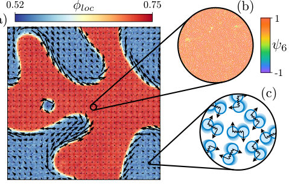
<figcaption class="paper-figure-caption"><b>Fig 1.</b> FIG. 1. (a) A configuration of Nd = 2 · 10242 dumbbells, evolving according to Eq. (1), during coarsening from the ho- mogeneous state into the separated state, for Pr = 5 · 10−3, Pe = 5 and global surface fraction ϕ = 0.65. Colors represent local surface fraction ϕloc, while the black arrows represent lo- cal velocities. (b) An enlargement of the dense phase, showing the projection ψ6 of the local hexatic order parameter ψ6,i [see definition in the text] on the global mean orientation. (c) An enlargement of the disordered phase, showing internal bonds and active torques acting on the dumbbells.</figcaption>
</figure>
<figure class="paper-figure-card">
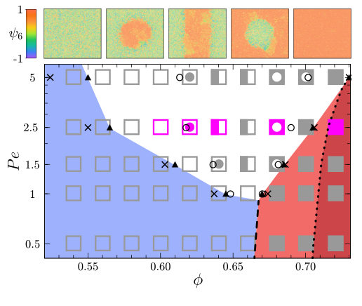
<figcaption class="paper-figure-caption"><b>Fig 2.</b> FIG. 2. Phase diagram of the model, in the regime of large inertia at Pr = 200. The blue and red regions represent the homogeneous liquid and the ordered phases, respectively. Black dashed and dotted lines indicate the liquid-hexatic and hexatic-solid transition, respectively. The phase separated re- gion (white area) is delimited by the binodal, indicated with black triangles representing the measured coexisting densities. Black crosses and circles indicate the binodal and spinodal densities, respectively, as extracted by the Maxwell construc- tion and the location of the maximum and minimum of the measured pressure. Accordingly, symbols indicate the typical state morphology: represents a...</figcaption>
</figure>
<figure class="paper-figure-card">
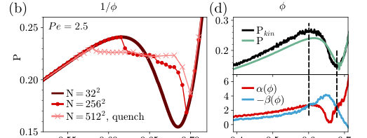
<figcaption class="paper-figure-caption"><b>Fig 3.</b> FIG. 3. (a) IK pressure for a system of N = 1024 beads and different P´eclet numbers, showing the Maxwell equal area construction for Pe ≥1. (b) Pressure as a function of ϕ for a system of N = 1024 beads (green line), N = 2562 (light blue dots), N = 5122 quenched from the separated state (blue crosses). (c) Kinetic temperature as a function of ϕ for a system of 1024 beads at Pe = 2.5 and different values of Pr. (d) (Top) Comparison between the IK and kinetic pressure for a system of 1024 beads. (Bottom) The two contribution α(ϕ) and β(ϕ) to the pressure slope.</figcaption>
</figure>
<figure class="paper-figure-card">
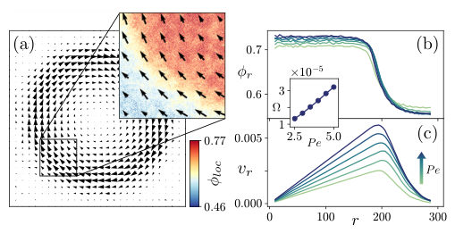
<figcaption class="paper-figure-caption"><b>Fig 4.</b> FIG. 5. (a) Local particle velocity, coarse-grained over a grid of size 20σ for a dense droplet immersed in the liquid phase. The inset shows an enlargement of this field across the interface, on top of the local density. Radial profile of (b) the local density and (c) the local velocity, averaged over concentric circular shells, centered in the center of mass of the droplet, for different Pes and clusters of similar radii.</figcaption>
</figure>
<figure class="paper-figure-card">
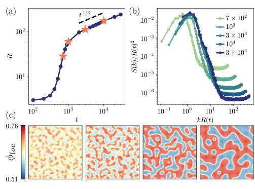
<figcaption class="paper-figure-caption"><b>Fig 5.</b> FIG. 4. (a) Growth of the domain characteristic length R(t) after a quench from the disordered state, averaged over 3 independent simulations. (b) Rescaled structure factor at different times. (c) Snapshots of the system, representing the local surface fraction, at the times indicated by red stars in panel (a).</figcaption>
</figure>
</div>

<p><strong>Summary.</strong> This work explores phase separation in active matter composed of inertial rotors driven by external torques. By analyzing the system's pressure and order parameters, the authors demonstrate that inertia is key to driving the system into a coexistence region between a dense hexatic solid and a dilute liquid. This provides a quantitative understanding of non-equilibrium phase transitions in active colloidal systems.</p>
<p><strong>Why it may be interesting.</strong> The study provides a detailed, non-equilibrium framework for understanding how active driving and inertia can induce phase separation, offering insights into active matter physics relevant to complex systems dynamics.</p>
<details>
<summary>Detailed structure</summary>
<p><strong>Main problem.</strong> The paper investigates the emergence of phase separation in a system of active, inertial rotors subjected to a constant applied torque, which breaks chiral symmetry.</p>
<p><strong>Main result.</strong> Phase separation into a dense, ordered hexatic phase and a dilute liquid phase is observed, with the mechanism being critically controlled by the system's inertia, leading to a generically unstable homogeneous state.</p>
<p><strong>Method.</strong> The study employs Molecular Dynamics (MD) simulations to map out the phase diagram and analyze thermodynamic quantities like the Irving-Kirkwood pressure.</p>
<p><strong>Model / system.</strong> The model consists of 2D dumbbells (inertial rotors) interacting via repulsive hard-core potentials and driven by an active torque ($   au_a$). The dynamics are governed by Langevin equations incorporating inertia.</p>
<p><strong>Key observables.</strong> Local hexatic order parameter ($\psi_{6,i}$), Irving-Kirkwood pressure ($P$), kinetic temperature ($T_{kin}$), and the phase diagram boundaries (binodal/spinodal).</p>
<p><strong>Important parameters / regimes.</strong> Péclet number ($    ext{Pe}$), Active Reynolds number ($  ext{Re}$), and Prandtl number ($  ext{Pr}$), which control the balance between active driving, inertia, and dissipation.</p>
<p><strong>Assumptions / limitations.</strong> The analysis assumes a constant applied torque ($    au_a$) and relies on MD simulations to characterize non-equilibrium phase behavior.</p>
<p><strong>Figures summary.</strong> Figures illustrate the phase diagram showing liquid-hexatic separation, pressure vs. density loops indicating instability, and domain coarsening kinetics ($R(t) \sim t^{1/3}$).</p>
<p><strong>Paper structure.</strong> The paper systematically analyzes the phase diagram based on activity ($   ext{Pe}$) and inertia ($  ext{Pr}$), detailing the mechanism of phase separation via pressure analysis and characterizing the resulting ordered hexatic phase.</p>
</details>
<details>
<summary>Abstract</summary>
<p>We uncover an emergent phase separation in a system of inertial dumbbells put into persistent rotation by a constant applied torque, breaking chiral symmetry, while interacting with each other through repulsive hard-core interactions. We numerically determine the phase diagram of the model, showing that there exists a binodal and a spinodal region where the system separates into a dense liquid and an ordered phase, which we identify as hexatic. An analysis of the system pressure unveils that the mechanism underlying the phase separation is heavily controlled by inertia. Locally injected kinetic energy is steadily stored into the system in a way that depends on density and that, at large inertia, results in a hot dilute and cool dense state, leading to a generically unstable homogeneous phase. The interplay between dumbbells' arrangement into clusters and chiral forces produces a spontaneous rigid rotation of the clusters around their centers of mass.</p>
</details>
<p><sub><a href="#top">↑ back to top</a></sub></p>

<p><a id="paper-2609.21630"></a></p>
<h3 id="spatially-resolved-quantum-magnetometry-and-stray-field-reconstruction-of-permalloy-microdisks-using-boron-vacancy-centers-in-hexagonal-boron-nitride"><a href="http://arxiv.org/abs/2609.21630v1">Spatially resolved quantum magnetometry and stray-field reconstruction of permalloy microdisks using boron-vacancy centers in hexagonal boron nitride</a></h3>
<p><strong>Authors:</strong> Peiting Wen, Shuyu Wen, Jiang Qu, Zeling Xiong, Katrin Schultheiss, Slawomir Prucnal, Artur Erbe, Kenji Watanabe, Takashi Taniguchi, Jürgen Lindner, Jürgen Fassbender, Manfred Helm, Shengqiang Zhou, Ruslan Salikhov, Helmut Schultheiss, Yonder Berencén<br>
<strong>Type:</strong> experiment · <strong>Category:</strong> other · <strong>PDF:</strong> <a href="https://arxiv.org/pdf/2609.21630v1">https://arxiv.org/pdf/2609.21630v1</a><br>
<strong>Analysis basis:</strong> full PDF text, analyzed in chunks
<strong>Topic relevance:</strong> <code>quantum measurements</code> <strong>3/5</strong> · <code>QC/QI experiment</code> <strong>2/5</strong> · <code>quantum optics experiment</code> <strong>1/5</strong></p>
<div class="figure-strip-hint">↔ Scroll figures horizontally</div>
<div class="paper-figures-scroll">
<figure class="paper-figure-card">
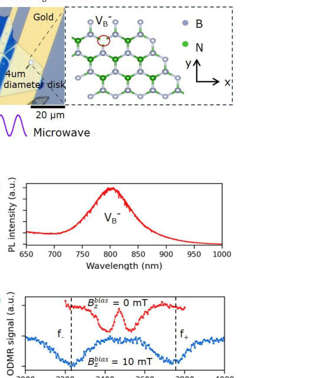
<figcaption class="paper-figure-caption"><b>Fig 1.</b> Figure 1. Hybrid VB⁻ quantum sensing platform and sensor characterization. (a) Schematic of the experimental configuration and optical microscope image of the transferred hBN flake integrated with a row of Py microdisks of different diameters fabricated on a coplanar waveguide; the present study focuses on the 4 μm-diameter disk. The right panel illustrates the atomic structure of the VB⁻ center. (b) Spin-dependent optical cycle and ground-state energy levels of the VB⁻ center. (c) Room-temperature photoluminescence spectrum of the VB⁻ centers in hBN. (d) ODMR spectra</figcaption>
</figure>
<figure class="paper-figure-card">
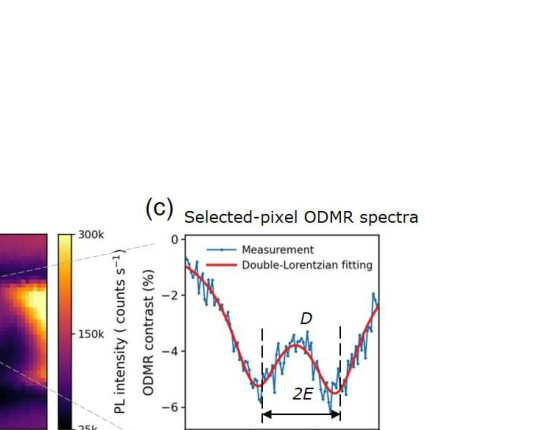
<figcaption class="paper-figure-caption"><b>Fig 2.</b> Figure 2. Pixel-resolved ODMR analysis. (a) Optical image of the investigated device showing the measurement region for the 4 μm-diameter Py microdisk (red dotted square). (b) PL map of the transferred VB⁻ ensembles within the selected area. (c) Representative ODMR spectrum recorded from a single selected pixel and the double-Lorentzian fitting used to extract the local spin- resonance parameters 𝐷 and 𝐸.</figcaption>
</figure>
<figure class="paper-figure-card">
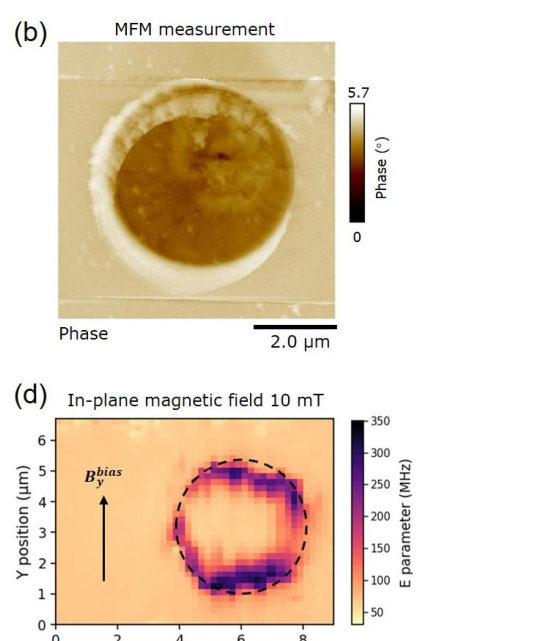
<figcaption class="paper-figure-caption"><b>Fig 3.</b> Figure 3. Magnetic characterization of the vortex-state Py microdisk by MFM and ODMR. (a) AFM topography of the fabricated Py microdisk on the coplanar waveguide, showing a measured disk diameter of approximately 4.2 μm, close to the nominal design diameter of 4.0 μm. (b) Corresponding zero-field MFM image showing no extended bipolar or multidomain magnetic</figcaption>
</figure>
<figure class="paper-figure-card">
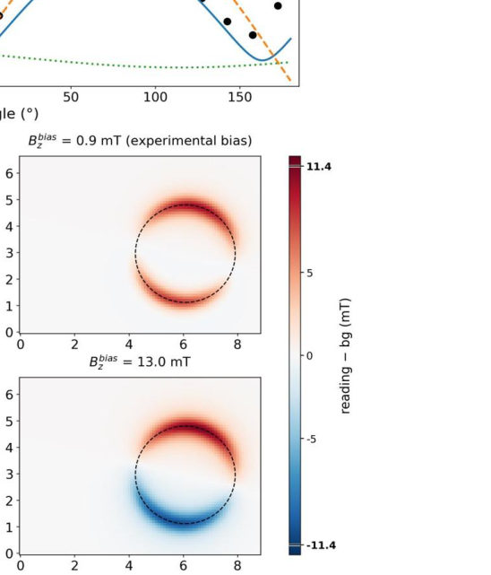
<figcaption class="paper-figure-caption"><b>Fig 4.</b> Figure 4. Quantitative reconstruction and validation of the magnetic-field distribution in</figcaption>
</figure>
</div>

<p><strong>Summary.</strong> This study reports on a novel method for quantitative magnetometry by integrating boron-vacancy spin defects in hBN onto permalloy microdisks. Using spatially resolved ODMR measurements, the researchers successfully reconstructed the out-of-plane stray magnetic field from a vortex-state disk. This validates the use of hBN quantum defects as highly sensitive, room-temperature sensors for mapping magnetic textures.</p>
<p><strong>Why it may be interesting.</strong> This work demonstrates a powerful, room-temperature quantum sensing modality for mapping magnetic fields, bridging quantum defect physics with classical condensed matter magnetism, which is highly relevant for quantum sensing applications.</p>
<details>
<summary>Detailed structure</summary>
<p><strong>Main problem.</strong> The paper addresses the challenge of quantitatively imaging magnetic microstructures, specifically the stray-field distribution from permalloy microdisks, using spatially resolved quantum magnetometry.</p>
<p><strong>Main result.</strong> The authors successfully reconstructed the out-of-plane stray-field distribution, revealing peak fields of approximately 11.2 mT, and validated this reconstruction using an edge-charge model.</p>
<p><strong>Method.</strong> Spatially resolved Optically Detected Magnetic Resonance (ODMR) measurements were performed on boron-vacancy (VB-) spin defects in hexagonal boron nitride (hBN) integrated with the magnetic sample.</p>
<p><strong>Model / system.</strong> The system involves a permalloy microdisk exhibiting a vortex state, measured using VB- centers in hBN. The analysis relies on relating the measured ODMR splitting to the local magnetic field via established quantum resonance equations.</p>
<p><strong>Key observables.</strong> Reconstructed out-of-plane stray-field distribution ($ ext{B}<em>z$), ODMR transition frequencies ($f</em>-, f_+$), and the magnetic-field-dependent splitting parameters ($D$ and $E$).</p>
<p><strong>Important parameters / regimes.</strong> Peak stray field $\approx 11.2 	ext{ mT}$; measurement temperature (room temperature); sensor sensitivity ($\approx 100 \mu	ext{T}/\sqrt{	ext{Hz}}$).</p>
<p><strong>Assumptions / limitations.</strong> The analysis assumes that local variations in the ODMR parameters can be separated into contributions from intrinsic spin properties (strain) and the external magnetic field.</p>
<p><strong>Figures summary.</strong> Figures illustrate the schematic setup, ODMR spectra used for fitting, the reconstructed magnitude and signed distribution of the stray field, and comparisons between the reconstructed field and predictions from the edge-charge model.</p>
<p><strong>Paper structure.</strong> The paper follows a structure of establishing the platform (hBN/VB- sensor), detailing the measurement technique (ODMR), applying the technique to a specific magnetic problem (Py disk vortex state), and finally quantitatively reconstructing the stray field using theoretical models (edge-charge model) for validation.</p>
</details>
<details>
<summary>Abstract</summary>
<p>Transferable hexagonal boron nitride (hBN) hosting negatively charged boron-vacancy (VB$^{-}$) spin defects offers a versatile platform for integrated quantum magnetometry, yet quantitative imaging of magnetic microstructures remains challenging. Here, we integrate a transferred hBN flake with a 4 $μ$m-diameter permalloy (Py = Ni${81}$Fe${19}$) microdisk and perform spatially resolved optically detected magnetic resonance measurements at room temperature. An applied in-plane magnetic field distorts the vortex-state magnetization, generating edge-localized magnetic surface charges and pronounced stray-field signatures at opposite disk edges. By referencing each pixel to its local zero-field splitting and correcting for a residual out-of-plane bias field, we quantitatively reconstruct the out-of-plane stray-field distribution, revealing peak fields of approximately 11.2 mT. An edge-charge model reproduces the spatial distribution and amplitude of the reconstructed field, linking the ODMR response to the field-driven evolution of the vortex state. These results establish transferred hBN VB$^{-}$ sensors for quantitative magnetometry of magnetic microstructures.</p>
</details>
<p><sub><a href="#top">↑ back to top</a></sub></p>

<p><a id="paper-2609.21290"></a></p>
<h3 id="efficient-mpo-construction-for-long-range-hamiltonians-with-periodic-boundary-conditions-application-to-many-body-dynamics"><a href="http://arxiv.org/abs/2609.21290v1">Efficient MPO Construction for Long-Range Hamiltonians with Periodic Boundary Conditions: Application to Many-Body Dynamics</a></h3>
<p><strong>Authors:</strong> Xin Wang, Bo Xiong<br>
<strong>Type:</strong> theory · <strong>Category:</strong> numerical methods · <strong>PDF:</strong> <a href="https://arxiv.org/pdf/2609.21290v1">https://arxiv.org/pdf/2609.21290v1</a><br>
<strong>Analysis basis:</strong> full PDF text, analyzed in chunks
<strong>Topic relevance:</strong> <code>methods for driven-dissipative</code> <strong>3/5</strong> · <code>analog quantum simulation</code> <strong>1/5</strong> · <code>non-equilibrium universality</code> <strong>1/5</strong></p>
<div class="figure-strip-hint">↔ Scroll figures horizontally</div>
<div class="paper-figures-scroll">
<figure class="paper-figure-card">
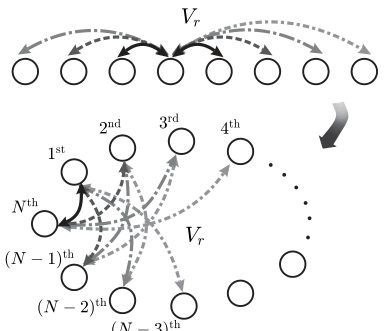
<figcaption class="paper-figure-caption"><b>Fig 1.</b> FIG. 1. Schematic illustration of finite-range interactions and peri- odic boundary conditions used for the MPO construction. (a) The 1D chain with OBC, where interactions of different ranges are repre- sented by different line styles. (b) The corresponding periodic chain forms a ring, highlighting the additional interaction terms introduced by the PBC. These interaction patterns determine the additional prop- agation channels required in the MPO representation.</figcaption>
</figure>
<figure class="paper-figure-card">
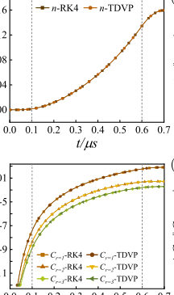
<figcaption class="paper-figure-caption"><b>Fig 2.</b> FIG. 2. Numerical benchmark of TDVP against RK4 method for quantum dynamical evolution. (a) Time dependence of the average occupation number n. (b) Relative error of the occupation number. (c) Time evolution of the absolute values of three spatial correlation functions Cr(r = 1, 2, 3) displayed on a base-10 logarithmic vertical axis. (d) Relative errors of the correlation functions versus evolution time. The gray dashed lines indicate the transitions between different stages of the quench protocol.</figcaption>
</figure>
<figure class="paper-figure-card">
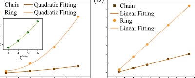
<figcaption class="paper-figure-caption"><b>Fig 3.</b> FIG. 3. Computational cost of the TDVP simulations as a function of the interaction range and system size. OBC and PBC results are represented by brown filled squares and orange filled circles, respec- tively. (a) Runtime as a function of the maximum interaction range r for N = 24, with second-order polynomial fits shown as solid lines. The inset shows the OBC runtime as a function of the corresponding MPO bond dimension DOBC r , where green diamonds and a green solid line denote the data and second-order polynomial fit, respec- tively. (b) Runtime as a function of system size N for r = 3, with linear fits shown as solid lines.</figcaption>
</figure>
</div>

<p><strong>Summary.</strong> This paper introduces a novel and efficient Matrix Product Operator (MPO) construction designed to handle long-range interactions on quantum spin chains with periodic boundary conditions. By embedding the PBC structure directly into the MPO formalism, the authors enable accurate time evolution simulations using the TDVP framework. The method is validated against high-accuracy classical benchmarks, offering a practical tool for studying complex many-body dynamics on rings.</p>
<p><strong>Why it may be interesting.</strong> This work provides a crucial algorithmic advancement for simulating complex, realistic quantum systems (like those with long-range interactions) on periodic lattices, overcoming known limitations of standard tensor network techniques.</p>
<details>
<summary>Detailed structure</summary>
<p><strong>Main problem.</strong> Developing an efficient Matrix Product Operator (MPO) construction to simulate quantum many-body dynamics in systems with long-range interactions under Periodic Boundary Conditions (PBC).</p>
<p><strong>Main result.</strong> The proposed systematic MPO construction accurately simulates quench dynamics in spin-1/2 chains under PBC, showing excellent agreement with the RK4 benchmark method.</p>
<p><strong>Method.</strong> The authors generalize the MPO formalism by embedding PBC and finite-range couplings directly into an open boundary MPO structure, utilizing the Time-Dependent Variational Principle (TDVP) for time evolution.</p>
<p><strong>Model / system.</strong> The study focuses on a spin-1/2 chain governed by a Hamiltonian containing both nearest-neighbor and finite-range interactions. The simulation is performed on lattices with both open and periodic boundary conditions.</p>
<p><strong>Key observables.</strong> Single-body and two-body observables, and spatial correlation functions.</p>
<p><strong>Important parameters / regimes.</strong> Interaction range ($r$), system size ($N$), and the bond dimension ($D$), which grows quadratically for PBC ($D_{	ext{ring}}^r \propto r^2$).</p>
<p><strong>Assumptions / limitations.</strong> The core assumption is that the PBC structure can be efficiently incorporated into the MPO framework without destroying the canonical gauge or causing excessive bond dimension inflation, which is a known issue with standard trace-based methods.</p>
<p><strong>Figures summary.</strong> Figure 1 schematically illustrates interaction patterns for OBC and PBC. Figure 3 compares the computational runtime scaling with interaction range ($r$) and system size ($N$) for both boundary conditions.</p>
<p><strong>Paper structure.</strong> The paper systematically develops the MPO construction for finite-range interactions, first addressing the OBC case, then extending it to PBC by adding independent propagation channels. Finally, it validates the method by benchmarking against RK4 and analyzing the computational scaling.</p>
</details>
<details>
<summary>Abstract</summary>
<p>Matrix product operator (MPO) serves as a fundamental component in tensor network simulations of quantum many-body dynamics. We employ an MPO construction that introduces additional propagation channels to embed both periodic boundary conditions and finite-range couplings directly into an open boundary MPO. We apply this construction within the time-dependent variational principle (TDVP) framework to simulate quench dynamics in a spin-1/2 chain with finite-range interactions, and benchmark the results numerically against the fourth-order Runge-Kutta method, finding excellent agreement for both single-body and two-body observables. The approach offers a practical route for tensor network simulations of many-body dynamics in periodic finite-range systems.</p>
</details>
<p><sub><a href="#top">↑ back to top</a></sub></p>

<p><a id="paper-2609.21917"></a></p>
<h3 id="quantized-transport-of-gap-solitons-in-the-harper-hofstadter-model"><a href="http://arxiv.org/abs/2609.21917v1">Quantized Transport of Gap Solitons in the Harper-Hofstadter Model</a></h3>
<p><strong>Authors:</strong> Oliver Ashfield, Henry Davenport, Tom Sheppard, David G. Reid, Holly A. J. Middleton-Spencer, A. C. Berceanu, Frank Schindler, Iacopo Carusotto, Hannah M. Price<br>
<strong>Type:</strong> theory · <strong>Category:</strong> other · <strong>PDF:</strong> <a href="https://arxiv.org/pdf/2609.21917v1">https://arxiv.org/pdf/2609.21917v1</a><br>
<strong>Analysis basis:</strong> full PDF text, analyzed in chunks
<strong>Topic relevance:</strong> <code>analog quantum simulation</code> <strong>3/5</strong> · <code>Frenkel-Kontorova</code> <strong>1/5</strong> · <code>quantum measurements</code> <strong>1/5</strong></p>
<div class="figure-strip-hint">↔ Scroll figures horizontally</div>
<div class="paper-figures-scroll">
<figure class="paper-figure-card">
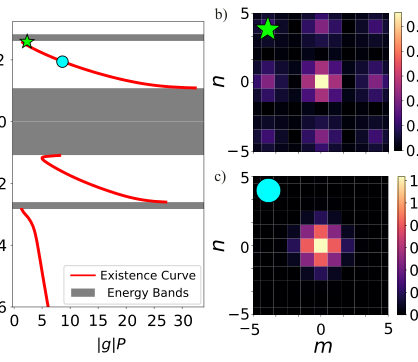
<figcaption class="paper-figure-caption"><b>Fig 1.</b> Figure 1. (a) The existence curve of solitons found in the Harper- Hofstadter model at α = 1/4 for attractive interactions (g = −1). The single-particle energy bands (gray shaded regions) are shown along with the frequency of the solitons (red solid line) as a function of the scaled power |g|P. It can be seen that the frequency of the solitons is restricted to the energy band gaps. Note also that there is a minimum power requirement in a given gap for solitons to form; a known feature of 2D gap solitons [56, 57]. (b) The density profile of a soliton with ω = 2.605 and P = 2.33, at a frequency close to the linear band edge (band-edge). (c) The density profile of a soliton with ω = 2 and P =...</figcaption>
</figure>
<figure class="paper-figure-card">
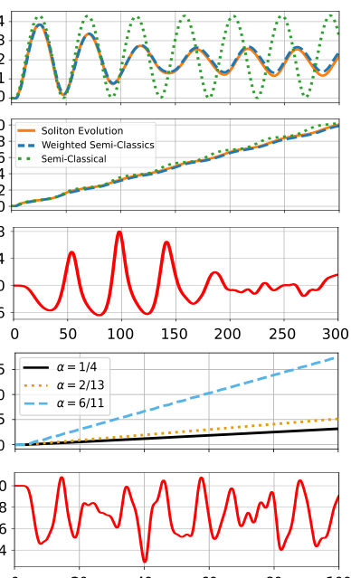
<figcaption class="paper-figure-caption"><b>Fig 2.</b> Figure 2. The centre-of-mass (C.O.M) dynamics for various gap solitons. All solitons are evolved under the external force with F = 0.05J/a, θ = π/4, τ = 1/J, and t0 = 3τ. (a-b) The parallel (r∥) and perpendicular (r⊥) motion, relative to the direction of the force, of a band-edge α = 1/4 soliton (ω = 2.605 and P = 2.33) (orange solid line) along with the weighted (blue dashed line) and un-weighted (green dotted line) semi-classical motion. (c) The normalized inverse participation ratio. (d) The perpendicular C.O.M motion of mid-gap solitons with: α = 1/4 (solid black line) at ω = 2.00 and P = 7.95 bifurcating from the top band with C4 = 1; α = 2/13 (dotted gold line) at ω = 2.5 and P =...</figcaption>
</figure>
<figure class="paper-figure-card">
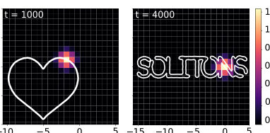
<figcaption class="paper-figure-caption"><b>Fig 3.</b> Figure 3. An α=1/4 mid-gap soliton (P =7.95, ω =2) tracing out an arbitrary, continuous curves in real-space using only a time- dependent external force F(t) where |F(t)|a ≪EBG.</figcaption>
</figure>
<figure class="paper-figure-card">
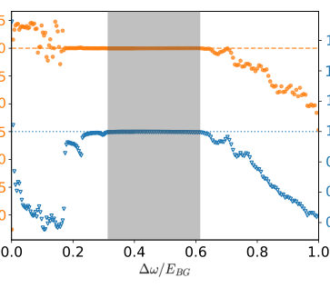
<figcaption class="paper-figure-caption"><b>Fig 4.</b> Figure 4. Existence of quantized motion for α = 1/4 gap solitons bifurcating from the top i = 4 single-particle band. A dual plot showing the fitted velocity v⊥and β against the difference ∆ω of the soliton frequency from the band minimum as a fraction of the band gap EBG. The error bars are each point are omitted due to them being too small. Dashed lines indicate the values of v⊥and β corresponding to ideal quantized motion for these parameters. The shaded grey region is added by eye to indicate the range of solitons undergoing quantized motion. All solitons were found for g = −1 and evolved under a force with F = 0.05J/a, τ = 1/J, t0 = 3τ and θ = π/4. The evolution was run until tfinal =...</figcaption>
</figure>
</div>

<p><strong>Summary.</strong> This paper analyzes gap solitons in the nonlinear Harper-Hofstadter model to demonstrate a robust, quantized transport mechanism. Mid-gap solitons exhibit a velocity perpendicular to the applied force that is linearly proportional to the force, enabling precise, controllable steering. This contrasts sharply with band-edge solitons, which become unstable under the same driving force.</p>
<p><strong>Why it may be interesting.</strong> This work provides a concrete, controllable mechanism for steering nonlinear wavepackets in systems relevant to quantum optics and cold atoms, linking transport properties directly to the topological invariants (Chern numbers) of the underlying band structure.</p>
<details>
<summary>Detailed structure</summary>
<p><strong>Main problem.</strong> The study investigates the dynamics and transport of gap solitons in the nonlinear Harper-Hofstadter model when subjected to an external force.</p>
<p><strong>Main result.</strong> Gap solitons with frequencies deep within the band gap exhibit a robust, quantized velocity perpendicular to the applied force, which is linearly proportional to the force and allows for arbitrary steering.</p>
<p><strong>Method.</strong> The analysis involves numerically solving the nonlinear evolution equation and analyzing the center-of-mass motion by fitting the position evolution to an ideal quantized trajectory.</p>
<p><strong>Model / system.</strong> The system is modeled by the Harper-Hofstadter model, which describes particle hopping on a 2D lattice under a magnetic field, augmented with a cubic nonlinearity (e.g., for cold atoms or Kerr optics).</p>
<p><strong>Key observables.</strong> Quantized transverse velocity ($v_{\perp}$), Inverse Participation Ratio (IPR) for localization, and the center-of-mass position $r_{\perp}(t)$.</p>
<p><strong>Important parameters / regimes.</strong> Soliton frequency ($\omega$) relative to the band gap, the strength of the external force ($F$), and the Chern number ($C_i$) of the underlying bands.</p>
<p><strong>Assumptions / limitations.</strong> The analysis assumes that the quantized motion is robust and can be characterized by fitting the position evolution to a specific functional form derived from the external force.</p>
<p><strong>Figures summary.</strong> Figures compare the perpendicular motion of band-edge versus mid-gap solitons under force, demonstrating the robust, quantized motion for mid-gap solitons, and show the fitting of the center-of-mass trajectory to the ideal quantized curve.</p>
<p><strong>Paper structure.</strong> The paper progresses by establishing the model (Harper-Hofstadter with nonlinearity), contrasting the unstable motion of band-edge solitons with the stable, quantized transport of mid-gap solitons, and finally quantifying this robust steering mechanism.</p>
</details>
<details>
<summary>Abstract</summary>
<p>We investigate the dynamics of gap solitons found in the Harper-Hofstadter model with an additional cubic nonlinearity, such as that describing weakly-interacting cold atoms or a Kerr nonlinearity in an optical platform. We find that certain solitons with frequencies deep in the band gap travel with a robust, quantized velocity perpendicular to the applied force and maintain their spatial profile over long timescales. Crucially, this velocity is linearly proportional to the applied force, allowing for arbitrary steering of the nonlinear wavepacket, without breakdown, using only a tunable external force. This quantized transport persists despite a highly non-uniform occupation of the linear Bloch states, and contrasts with solitons near the band edge, which deform and delocalize under the same force. These results point to a robust and highly controllable mechanism for steering nonlinear solitons in experimentally accessible platforms.</p>
</details>
<p><sub><a href="#top">↑ back to top</a></sub></p>

<p><a id="paper-2609.21846"></a></p>
<h3 id="sine-gordon-model-with-bosonic-tensor-networks-continuum-matching-and-soliton-scattering"><a href="http://arxiv.org/abs/2609.21846v1">Sine-Gordon Model with Bosonic Tensor Networks: Continuum Matching and Soliton Scattering</a></h3>
<p><strong>Authors:</strong> Florian Hechenberger, Tommaso Rainaldi, Felix Ringer<br>
<strong>Type:</strong> theory · <strong>Category:</strong> numerical methods · <strong>PDF:</strong> <a href="https://arxiv.org/pdf/2609.21846v1">https://arxiv.org/pdf/2609.21846v1</a><br>
<strong>Analysis basis:</strong> full PDF text, analyzed in chunks
<strong>Topic relevance:</strong> <code>methods for driven-dissipative</code> <strong>3/5</strong> · <code>Frenkel-Kontorova</code> <strong>1/5</strong> · <code>analog quantum simulation</code> <strong>1/5</strong></p>
<div class="figure-strip-hint">↔ Scroll figures horizontally</div>
<div class="paper-figures-scroll">
<figure class="paper-figure-card">
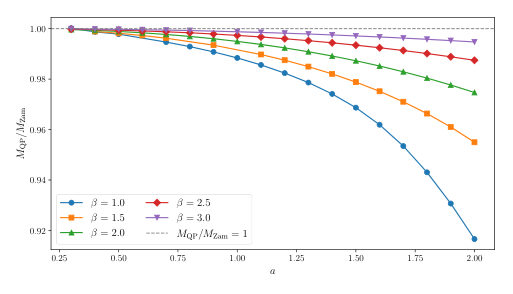
<figcaption class="paper-figure-caption"><b>Fig 1.</b> FIG. 1: Ratio of the quasiparticle soliton mass to the scheme-corrected Zamolodchikov result (30) as a function of the lattice spacing, for d = 90 and χ = 64.</figcaption>
</figure>
<figure class="paper-figure-card">
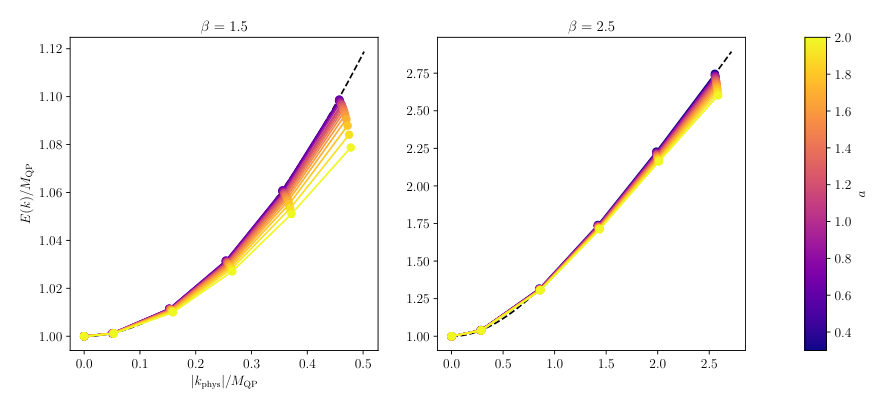
<figcaption class="paper-figure-caption"><b>Fig 2.</b> FIG. 2: Normalized soliton dispersion relation E(k)/MQP at two representative couplings β = 1.5 and β = √</figcaption>
</figure>
<figure class="paper-figure-card">
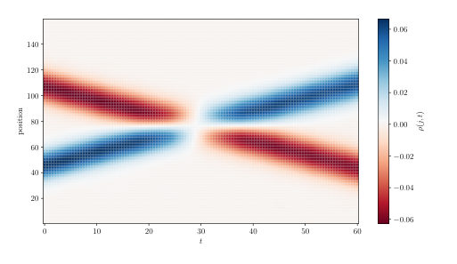
<figcaption class="paper-figure-caption"><b>Fig 3.</b> FIG. 3: Topological charge density ρ(j, t) for run 4 of Table III at a = 0.75, p = 0.60, N = 160. The soliton carries positive topological charge density ρ &gt; 0 while the antisoliton carries ρ &lt; 0. The trajectories confirm the expected transmissive behavior.</figcaption>
</figure>
<figure class="paper-figure-card">
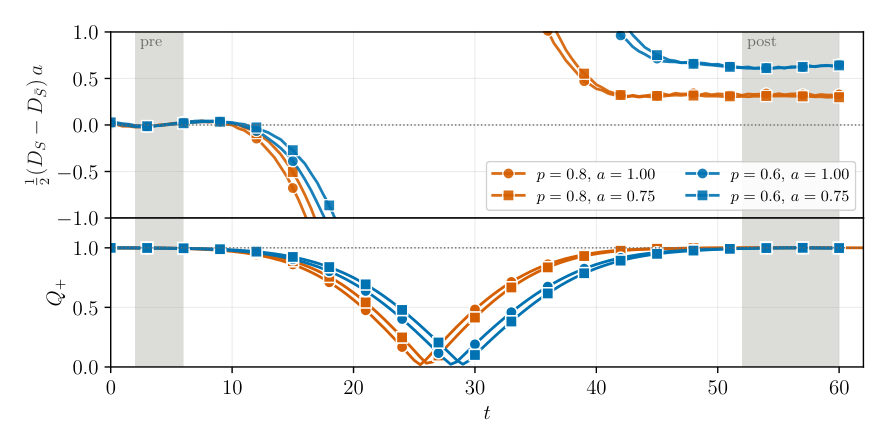
<figcaption class="paper-figure-caption"><b>Fig 4.</b> FIG. 4: Antisymmetric displacement 1 2(DS −D ¯S)a relative to the free reference, referenced to the pre-collision window, and the positive charge Q+. Shaded bands mark the pre-collision window [2, 6] and the post-collision window [52, 60].</figcaption>
</figure>
<figure class="paper-figure-card">
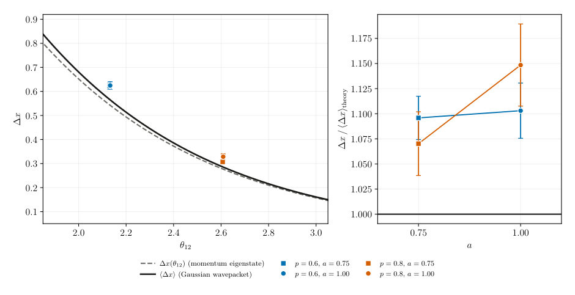
<figcaption class="paper-figure-caption"><b>Fig 5.</b> FIG. 5: Measured displacement versus relative rapidity, compared with Eq. (13) for momentum eigenstates (dashed) and with its packet average (36) at σk = 0.088 (solid). The right panel shows the ratio to the packet average as a function of lattice spacing. Color encodes the momentum and the marker the lattice spacing.</figcaption>
</figure>
</div>

<p><strong>Summary.</strong> This paper uses bosonic tensor networks to bridge the gap between the lattice Sine-Gordon model and its continuum limit. By matching lattice couplings to continuum normalization, the authors accurately predict key physical quantities like soliton masses and scattering dynamics. This work establishes a robust numerical framework for studying renormalization and dynamics in quantum field theories.</p>
<p><strong>Why it may be interesting.</strong> The use of bosonic tensor networks to simulate integrable field theories like Sine-Gordon provides a powerful, non-perturbative benchmark for quantum simulation techniques applicable to other complex Hamiltonian lattice field theories.</p>
<details>
<summary>Detailed structure</summary>
<p><strong>Main problem.</strong> The paper aims to quantitatively connect the lattice Sine-Gordon model to its continuum theory and study the dynamics of soliton scattering.</p>
<p><strong>Main result.</strong> The bosonic simulations successfully recover the exact continuum predictions for the soliton mass, breather masses, and the characteristic rapidity dependence of the Wigner spatial displacement during collisions.</p>
<p><strong>Method.</strong> The study employs bosonic tensor networks (MPS) for time evolution and uses continuum matching techniques by comparing lattice vertex operators to conformal field theory normalization.</p>
<p><strong>Model / system.</strong> The physical system is the Sine-Gordon model in 1+1 dimensions, described by a Hamiltonian involving a cosine potential. The analysis uses lattice discretization and bosonic tensor networks to simulate quantum dynamics.</p>
<p><strong>Key observables.</strong> Soliton mass ($M_{sol}$), breather masses, and the Wigner spatial displacement ($\Delta x$) during soliton-antisoliton scattering.</p>
<p><strong>Important parameters / regimes.</strong> The bare lattice coupling, the renormalized continuum mass parameter, and the parameter $eta^2/(8\pi)$ governing the model's flow.</p>
<p><strong>Assumptions / limitations.</strong> The method relies on the ability to perform continuum matching at the free-boson UV fixed point and assumes the validity of the variational ansatz for state construction.</p>
<p><strong>Figures summary.</strong> Figures compare the measured antisymmetric displacement during scattering against theoretical predictions derived from momentum eigenstates and wave packet averages, showing good agreement.</p>
<p><strong>Paper structure.</strong> The work proceeds by first establishing the continuum matching procedure, then using tensor networks to simulate the time evolution of localized excitations (solitons) and finally analyzing the scattering dynamics by measuring the Wigner displacement.</p>
</details>
<details>
<summary>Abstract</summary>
<p>We use bosonic tensor networks to connect the lattice sine-Gordon model in the Hamiltonian formulation quantitatively to its continuum theory. Matching the lattice vertex operator to its conformal normalization at the free-boson ultraviolet fixed point yields the exact relation between the bare lattice coupling and the renormalized continuum mass parameter. The soliton mass then approaches Zamolodchikov's exact continuum prediction throughout the studied parameter range, without adjustable parameters. Using uniform matrix product states and a quasiparticle ansatz, we also recover the relativistic soliton dispersion and the two lightest breather masses at the percent level. We simulate real-time collisions of Gaussian soliton-antisoliton wave packets near a reflectionless point and extract the Wigner spatial displacement. We compare this displacement with the exact continuum prediction obtained from the momentum derivative of the transmission phase, recovering its characteristic rapidity dependence. Our bosonic simulations provide a foundation for nonintegrable extensions, offer lessons for renormalization in other Hamiltonian lattice field theories, including gauge theories, and provide benchmarks for continuous-variable quantum simulations.</p>
</details>
<p><sub><a href="#top">↑ back to top</a></sub></p>

<p><a id="paper-2609.21796"></a></p>
<h3 id="parameter-decoupled-quantum-superresolution-without-multiparameter-estimation"><a href="http://arxiv.org/abs/2609.21796v1">Parameter-Decoupled Quantum Superresolution without Multiparameter Estimation</a></h3>
<p><strong>Authors:</strong> X. -F. Qian<br>
<strong>Type:</strong> theory · <strong>Category:</strong> other · <strong>PDF:</strong> <a href="https://arxiv.org/pdf/2609.21796v1">https://arxiv.org/pdf/2609.21796v1</a><br>
<strong>Analysis basis:</strong> full PDF text, analyzed in chunks
<strong>Topic relevance:</strong> <code>quantum measurements</code> <strong>3/5</strong></p>
<div class="figure-strip-hint">↔ Scroll figures horizontally</div>
<div class="paper-figures-scroll">
<figure class="paper-figure-card">

<figcaption class="paper-figure-caption"><b>Fig 1.</b> FIG. 1: Concept of parameter-decoupled quantum superresolution. (a) Two passive sources separated by s produce overlapping point-spread functions. Their brightness imbalance b, mutual-coherence magnitude g, and relative phase φ are generally unknown. (b) The received field is projected onto two “decoupled” channels, producing detection probabilities pα and pβ that depends on multiple source parameters b, g, φ. (c) Their log-probability observable Dαβ = ln pα −ln pβ = Dαβ(s) cancels the common dependence on b, g, and φ, leaving a function of the separation alone. The separation can therefore be recovered through ˆs = f(Dαβ) without estimating the three source-property nuisance parameters.</figcaption>
</figure>
<figure class="paper-figure-card">

<figcaption class="paper-figure-caption"><b>Fig 2.</b> FIG. 2: General families of parameter-decoupled measurements. (a) For a pair of projection modes {ϕα, ϕβ}, the dependence on the source-property nuisance parameters cancels when their shifted-PSF overlap ratios satisfy Rα(s) = Rβ(s), where Rj(s) = ⟨ϕj|h+⟩/⟨ϕj|h−⟩. The general solutions turn into two families : parity eigenmodes and nonparity channels. For parity eigen modes, any two channels belonging to the same parity sector provide a parameter-decoupling solution. (b) Solution map for example pairs of Hermite–Gaussian modes (HGm, HGn). Even–even and odd–odd pairs satisfy the same-parity condition, whereas opposite-parity pairs do not. The lowest-order nontrivial pair, HG0–HG2, is...</figcaption>
</figure>
<figure class="paper-figure-card">

<figcaption class="paper-figure-caption"><b>Fig 3.</b> FIG. 3: Fisher information performance and asymptotic attainment of the quantum limit. (a) Fisher information as a function of normalized separation s/σ for the representative source parameters b = 0.4, g = 0.6, and φ = π/8. The solid blue curve is the nuisance-adjusted quantum Fisher information F Q s|η for the full four-parameter model. The red dashed curve is the conditional</figcaption>
</figure>
</div>

<p><strong>Summary.</strong> This paper introduces a novel measurement technique to achieve quantum superresolution for passive sources by eliminating the need to estimate unknown source parameters. By constructing a parameter-decoupled log-probability observable, the separation distance can be robustly determined, converting a complex multiparameter problem into a simple, single-parameter measurement.</p>
<p><strong>Why it may be interesting.</strong> This work provides a practical, resource-consistent method for quantum metrology in realistic, noisy environments, which is highly relevant for quantum optics and sensing applications.</p>
<details>
<summary>Detailed structure</summary>
<p><strong>Main problem.</strong> The paper addresses the challenge of achieving quantum superresolution for closely spaced sources when the measurement is corrupted by unknown nuisance parameters (like brightness imbalance, coherence, or phase).</p>
<p><strong>Main result.</strong> A parameter-decoupled measurement, based on a log-probability invariant, can be constructed that allows the separation distance to be determined without estimating these unknown nuisance parameters.</p>
<p><strong>Method.</strong> The authors use a complete four-parameter Quantum Fisher Information analysis to identify the accessible separation information, and then construct a measurement observable invariant under the nuisance parameters.</p>
<p><strong>Model / system.</strong> The system models a generic two-center signal from realistic passive sources, described by a mixed state dependent on separation ($s$) and nuisance parameters ($   heta = (s, b, g, \varphi)$).</p>
<p><strong>Key observables.</strong> The directly measurable log-probability contrast, $D_{\alphaeta} = \ln p_\alpha - \ln p_eta$, and the nuisance-adjusted Quantum Fisher Information, $F_{Q,s|\eta}$.</p>
<p><strong>Important parameters / regimes.</strong> Separation distance ($s$), nuisance parameters ($b, g, \varphi$), and the sub-Rayleigh regime ($0 < s < \sigma$).</p>
<p><strong>Assumptions / limitations.</strong> The method relies on finding measurement channels that satisfy a specific parameter-decoupling condition ($R_\alpha(s) = R_eta(s)$) and assumes a calibrated PSF.</p>
<p><strong>Figures summary.</strong> Figure 1 illustrates the concept by showing how the log-probability observable $D_{\alphaeta}$ cancels common parameter dependence, leaving a function of $s$. Figure 3 confirms the finite information in the sub-Rayleigh regime.</p>
<p><strong>Paper structure.</strong> The paper first analyzes the full four-parameter QFI, derives the parameter-decoupled observable $D_{\alphaeta}$ using specific measurement channels (like parity eigenmodes), and finally shows that the achievable classical Fisher information saturates the nuisance-adjusted quantum limit in the sub-Rayleigh regime.</p>
</details>
<details>
<summary>Abstract</summary>
<p>Quantum superresolution promises to resolve closely spaced sources beyond the diffraction limit, but existing approaches generally rely on idealized source properties or require simultaneous estimation of multiple coupled parameters of realistic sources. Here we introduce a parameter-decoupled measurement that determines the separation of realistic passive sources without estimating their unknown brightness imbalance, mutual coherence, or relative phase. A complete four-parameter quantum Fisher information analysis identifies the separation information that remains accessible in the presence of these nuisance parameters. We then construct a directly measurable log-probability invariant from projection channels whose conditional statistics depend only on the separation. Broad classes of channel pairs satisfy the resulting decoupling condition. For a Gaussian point-spread function, the lowest-order implementation asymptotically attains the four-parameter quantum limit per incident signal in the sub-Rayleigh regime. This approach converts a realistic multiparameter imaging problem into an operationally single-parameter measurement, providing a practical route toward quantum-enhanced resolution of passive spatial, temporal, and spectral signals.</p>
</details>
<p><sub><a href="#top">↑ back to top</a></sub></p>

<p><a id="paper-2609.21249"></a></p>
<h3 id="the-pinnacle-architecture-with-fixed-connectivity-of-degree-eight"><a href="http://arxiv.org/abs/2609.21249v1">The Pinnacle Architecture with fixed connectivity of degree eight</a></h3>
<p><strong>Authors:</strong> Paul Webster, Tom Peham, Lawrence Z. Cohen<br>
<strong>Type:</strong> theory · <strong>Category:</strong> quantum information and computing · <strong>PDF:</strong> <a href="https://arxiv.org/pdf/2609.21249v1">https://arxiv.org/pdf/2609.21249v1</a><br>
<strong>Analysis basis:</strong> full PDF text, analyzed in chunks
<strong>Topic relevance:</strong> <code>QC/QI experiment</code> <strong>3/5</strong></p>
<div class="figure-strip-hint">↔ Scroll figures horizontally</div>
<div class="paper-figures-scroll">
<figure class="paper-figure-card">

<figcaption class="paper-figure-caption"><b>Fig 1.</b> FIG. 1. Comparison of the baseline architecture of Ref. [1], which allows for RSA-2048 factoring with approximately 100 000 qubits in one month and the Frozen Pinnacle Architecture presented here, which allows factoring with approximately 120 000 qubits in the same time while ensuring a fixed connectivity degree of eight. The Processing/Memory Unit refers to a dual-use module made up of blocks with both a processing sector and a memory sector, as explained in section III A and section III B 2.</figcaption>
</figure>
<figure class="paper-figure-card">

<figcaption class="paper-figure-caption"><b>Fig 2.</b> FIG. 2. Circuit-level simulation results for the per-block logi- cal error rate of the Frozen Pinnacle components at p = 10−3, versus code distance d. Filled markers are simulated data (d = 4, 6, 10) while open markers (d = 16, 24) are extrapolated from the fit of eq. (1). Error bars and the shaded extrapolation band denote 95% confidence intervals.</figcaption>
</figure>
</div>

<p><strong>Summary.</strong> This paper details the adaptation of the Pinnacle quantum computing architecture for superconducting qubits, which inherently have fixed connectivity. By developing the 'Frozen Pinnacle Architecture' with a fixed connectivity degree of eight, the authors demonstrate a viable pathway to factor 2048-bit RSA integers using about 120,000 physical qubits in one month.</p>
<p><strong>Why it may be interesting.</strong> This work provides a concrete, resource-estimated roadmap for scaling quantum computation on superconducting hardware by solving the critical issue of fixed connectivity, which is a major bottleneck in realizing large-scale quantum processors.</p>
<details>
<summary>Detailed structure</summary>
<p><strong>Main problem.</strong> The core challenge is adapting the high-level Pinnacle quantum computation architecture to the physical constraints of superconducting qubits, specifically the requirement for fixed qubit connectivity.</p>
<p><strong>Main result.</strong> The modified 'Frozen Pinnacle Architecture' successfully supports the factoring of a 2048-bit RSA integer within one month using approximately 120,000 physical qubits.</p>
<p><strong>Method.</strong> The authors modified the architecture by using specific gadgets and relying on cyclic shift automorphisms to implement necessary logical Pauli measurements while strictly maintaining a fixed connectivity degree of eight.</p>
<p><strong>Model / system.</strong> The system is based on superconducting qubits and utilizes the generalized bicycle (GB) code, implemented through interconnected 'gadget systems' and 'processing blocks' to achieve fault-tolerant quantum computation.</p>
<p><strong>Key observables.</strong> Factoring time (one month), physical qubit count (120,000), and the fixed connectivity degree (eight).</p>
<p><strong>Important parameters / regimes.</strong> Physical error rate ($10^{-3}$), code cycle time ($1 \mu s$), and reaction time ($10 \mu s$).</p>
<p><strong>Assumptions / limitations.</strong> The resource estimate assumes a runtime limit of one month, and the analysis relies on extrapolating simulation results for larger code distances using an ansatz.</p>
<p><strong>Figures summary.</strong> Figure 1 compares the baseline vs. frozen architecture qubit counts. Figure 2 shows the per-block logical error rate vs. code distance for various measurement components.</p>
<p><strong>Paper structure.</strong> The paper details the architectural modification to enforce fixed connectivity, describes the implementation of complex operations like memory access and Toffoli gates using specific automorphisms, and concludes with a resource estimation for RSA-2048 factoring.</p>
</details>
<details>
<summary>Abstract</summary>
<p>We show how the Pinnacle architecture can be adapted to be compatible with superconducting qubits, where the connectivity between qubits must be fixed at fabrication. Specifically, we present a modified instantiation of the architecture that has fixed connectivity degree of eight. With this instantiation, we show that a 2048-bit RSA integer can be factored in one month with approximately 120 000 physical qubits, given a physical error rate of $10^{-3}$, code cycle time of 1 microsecond and reaction time of 10 microseconds.</p>
</details>
<p><sub><a href="#top">↑ back to top</a></sub></p>

<p><a id="paper-2609.21640"></a></p>
<h3 id="time-rescaling-for-second-order-feedback-based-quantum-optimization"><a href="http://arxiv.org/abs/2609.21640v1">Time rescaling for second-order feedback-based quantum optimization</a></h3>
<p><strong>Authors:</strong> Leticia Bertuzzi, João P. Engster, Evandro C. R. da Rosa, Eduardo I. Duzzioni<br>
<strong>Type:</strong> theory · <strong>Category:</strong> quantum information and computing · <strong>PDF:</strong> <a href="https://arxiv.org/pdf/2609.21640v1">https://arxiv.org/pdf/2609.21640v1</a><br>
<strong>Analysis basis:</strong> full PDF text, analyzed in chunks
<strong>Topic relevance:</strong> <code>quantum measurements</code> <strong>3/5</strong></p>
<div class="figure-strip-hint">↔ Scroll figures horizontally</div>
<div class="paper-figures-scroll">
<figure class="paper-figure-card">

<figcaption class="paper-figure-caption"><b>Fig 1.</b> FIG. 1. Circuit model for TR-Hy-FALQON. At the end of each layer, the same quantities required for SO-FALQON are measured and used to calculate the control parameter. The effective time step ˙f∆τ is determined according to Eq. (10).</figcaption>
</figure>
<figure class="paper-figure-card">

<figcaption class="paper-figure-caption"><b>Fig 2.</b> FIG. 2. TR-Hy-FALQON approximation ratios for different values of ∆τ up to its critical value. The results were obtained for the selected geometries in Fig. 3, and the bold curves in- dicate the top five best-performing values for ∆τ, highlighted in the insets. The horizontal dashed line is the theoreti- cal approximation ratio guarantee provided by the classical Goemans–Williamson algorithm.</figcaption>
</figure>
<figure class="paper-figure-card">

<figcaption class="paper-figure-caption"><b>Fig 3.</b> FIG. 3. Selected geometries employed to obtain the best ap- proximation ratios for TR-Hy-FALQON described in Fig. 2. Left: 12-vertex 3-regular graph. Right: 14-vertex Erd˝os– R´enyi graph, with p = 0.3.</figcaption>
</figure>
<figure class="paper-figure-card">

<figcaption class="paper-figure-caption"><b>Fig 4.</b> FIG. 4. Approximation ratios for random 12-vertex 3-regular graphs and 14-vertex Erd˝os–R´enyi graphs as a function of the number of layers employed in the quantum circuits generated by the QAOA, FO-FALQON, SO-FALQON, TR-FALQON, and TR-Hy-FALQON algorithms. Top: averaged results for 30 different graphs chosen randomly. The shaded regions correspond to the standard deviation. For each FALQON variant, only one critical time-step value, ∆t or ∆τ, has been used. Bottom: in particular, we used those values of the critical time steps that return the best approximation ratios for the graphs depicted in Fig. 3. The horizontal dashed line is the theoretical approximation ratio guarantee provided by...</figcaption>
</figure>
</div>

<p><strong>Summary.</strong> This paper introduces TR-Hy-FALQON, a novel quantum optimization algorithm that merges time-rescaling and second-order feedback corrections into the FALQON framework. By doing so, it significantly reduces the required circuit depth and improves convergence stability compared to prior methods. This advancement makes quantum optimization more viable for near-term NISQ quantum hardware.</p>
<p><strong>Why it may be interesting.</strong> The focus on reducing circuit depth and achieving stable convergence with larger time steps directly addresses major hardware limitations in current quantum computing architectures, making it highly relevant for theoretical work on quantum algorithms.</p>
<details>
<summary>Detailed structure</summary>
<p><strong>Main problem.</strong> The primary goal is to improve quantum optimization algorithms, specifically Feedback-based Quantum Algorithms (FQAs), to reduce circuit depth for practical implementation on Noisy Intermediate-Scale Quantum (NISQ) devices.</p>
<p><strong>Main result.</strong> The proposed unified framework, TR-Hy-FALQON, significantly improves upon previous variants by achieving high approximation ratios with fewer required circuit layers compared to existing methods.</p>
<p><strong>Method.</strong> The authors merge time-rescaling techniques with second-order error corrections within the FALQON framework to derive a robust control parameter.</p>
<p><strong>Model / system.</strong> The work models quantum computation for solving optimization problems, governed by a total Hamiltonian $H = H_p + eta(t)H_d$, where $H_p$ is the problem Hamiltonian and $H_d$ is the driver Hamiltonian.</p>
<p><strong>Key observables.</strong> Approximation ratio ($r$), circuit depth (number of layers $\ell^*$), and the cost function $C(t) = \langle H_p 
angle$.</p>
<p><strong>Important parameters / regimes.</strong> The time step $\Delta	au$ (for time-rescaling) and the critical time step $\Delta	au_c$ are key parameters determining convergence stability.</p>
<p><strong>Assumptions / limitations.</strong> The analysis assumes that the combined method allows for stable convergence with few layers, avoiding the need for iterative classical optimization loops.</p>
<p><strong>Figures summary.</strong> Figures compare the approximation ratio vs. number of layers for various algorithms (including QAOA and different FALQON variants) across 3-regular and Erdős–Rényi graphs, benchmarking against the classical Goemans–Williamson bound.</p>
<p><strong>Paper structure.</strong> The paper builds upon existing FALQON variants (TR-FALQON, SO-FALQON) by developing a unified, time-rescaled, second-order approach (TR-Hy-FALQON). It then rigorously benchmarks this new method against established quantum and classical optimization techniques.</p>
</details>
<details>
<summary>Abstract</summary>
<p>Feedback-based quantum algorithms recently gained attention by demonstrating how quantum computers can be used to solve optimization problems without resorting to hybrid quantum-classical architectures. Recent progress made with Feedback-based Algorithm for Quantum Optimization (FALQON) variants significantly reduced the depth of the required circuits. In this work, we merge the time-rescaled and second-order FALQON variants into a unified framework. The results show an important improvement over past modifications, reducing circuit depth and allowing a more flexible choice of time-steps, while maintaining stable solutions. This FALQON variant makes it suitable for the NISQ era.</p>
</details>
<p><sub><a href="#top">↑ back to top</a></sub></p>

<p><a id="paper-2609.21124"></a></p>
<h3 id="persistence-resetting-and-first-passage-times-of-an-active-ornstein-uhlenbeck-particle"><a href="http://arxiv.org/abs/2609.21124v1">Persistence, resetting, and first-passage times of an active Ornstein--Uhlenbeck particle</a></h3>
<p><strong>Authors:</strong> Demosthenes K. Georgiou, Paul C. Bressloff, Thibault Bertrand<br>
<strong>Type:</strong> theory · <strong>Category:</strong> statistical mechanics · <strong>PDF:</strong> <a href="https://arxiv.org/pdf/2609.21124v1">https://arxiv.org/pdf/2609.21124v1</a><br>
<strong>Analysis basis:</strong> full PDF text, analyzed in chunks
<strong>Topic relevance:</strong> <code>Keldysh / 2PI / non-Gaussian methods</code> <strong>2/5</strong> · <code>methods for driven-dissipative</code> <strong>2/5</strong> · <code>analog quantum simulation</code> <strong>1/5</strong> · <code>correlated / nonlocal dissipation</code> <strong>1/5</strong> · <code>driven-dissipative phase transition</code> <strong>1/5</strong> · <code>non-equilibrium universality</code> <strong>1/5</strong> · <code>quantum measurements</code> <strong>1/5</strong></p>
<div class="figure-strip-hint">↔ Scroll figures horizontally</div>
<div class="paper-figures-scroll">
<figure class="paper-figure-card">

<figcaption class="paper-figure-caption"><b>Fig 1.</b> Figure 1. Schematic trajectory of an active Ornstein–Uhlenbeck particle on the interval [0, L], with an absorbing boundary at x = 0 and a reflecting boundary at x = L. Resetting returns the particle to x0, and the propulsion velocity is reset according to the chosen protocol.</figcaption>
</figure>
<figure class="paper-figure-card">

<figcaption class="paper-figure-caption"><b>Fig 2.</b> Figure 2. MFPT without resetting as a function of x0/L for (a) τ = 0.25 and (b) τp = 1 for the values of Pe indicated in the figure. Solid lines show the perturbative approximation to O(Pe2) and symbols show simulation results.</figcaption>
</figure>
<figure class="paper-figure-card">

<figcaption class="paper-figure-caption"><b>Fig 3.</b> Figure 4. MFPT without resetting for fixed initial velocities, for (a) v0 = +1 and (b) v0 = −1 for τp = 0.25 and the values of Pe indicated in the figure. The results are obtained from simulations.</figcaption>
</figure>
<figure class="paper-figure-card">

<figcaption class="paper-figure-caption"><b>Fig 4.</b> Figure 5. MFPT Tr as a function of the resetting rate r for varying values of x0/L, at fixed τp = 1, and Pe = 1. The solid curves show the perturbative prediction to O(Pe2), and the symbols are the simulation results. Depending on the initial position, the dependence on r is either monotonic or non-monotonic.</figcaption>
</figure>
<figure class="paper-figure-card">

<figcaption class="paper-figure-caption"><b>Fig 5.</b> Figure 6. FPT distributions for (a) x0/L = 0.25 and (b) x0/L = 0.75 at fixed Pe = 1 and τp = 1. Solid lines and symbols denote the theory and simulations results respectively. Resetting suppresses the long-time tail when it is beneficial, but delays absorption when it interrupts trajectories that would otherwise reach the target.</figcaption>
</figure>
</div>

<p><strong>Summary.</strong> This theoretical work analyzes how the mean first-passage time of an active particle is affected by intrinsic activity and external stochastic resetting. Using perturbative methods on the Fokker-Planck equation, the authors map out parameter regimes where the combination of activity and resetting can synergistically accelerate the process towards an absorbing boundary.</p>
<p><strong>Why it may be interesting.</strong> While focused on classical active matter, the mathematical techniques involving non-equilibrium dynamics, boundary value problems, and the interplay between external driving (activity) and external intervention (resetting) are highly relevant to open quantum systems and quantum control theory.</p>
<details>
<summary>Detailed structure</summary>
<p><strong>Main problem.</strong> The study investigates the statistics of first-passage times (FPT) for an active Ornstein-Uhlenbeck particle confined to a 1D interval with specific boundary conditions, incorporating stochastic resetting.</p>
<p><strong>Main result.</strong> The paper determines the conditions under which activity and resetting together reduce the mean first-passage time, identifying a phase diagram controlling this reduction.</p>
<p><strong>Method.</strong> The analysis employs perturbative solutions to the Fokker-Planck equation in the weak-activity regime, utilizing a renewal framework for the resetting dynamics.</p>
<p><strong>Model / system.</strong> The model is an active Ornstein-Uhlenbeck particle (AOUP) confined to $[0, L]$, featuring an absorbing boundary at one end and a reflecting boundary at the other. Stochastic resetting is added to the dynamics.</p>
<p><strong>Key observables.</strong> Mean First-Passage Time (MFPT), survival probability, and the FPT density.</p>
<p><strong>Important parameters / regimes.</strong> Diffusivity ($D$), persistence time ($  au_p$), activity strength ($p$), and the resetting rate ($r$).</p>
<p><strong>Assumptions / limitations.</strong> The analysis is restricted to the weak-activity regime ($    ext{Pe} \ll 1$), and Poissonian resetting is assumed.</p>
<p><strong>Figures summary.</strong> Figure 1 schematically illustrates the AOUP trajectory, boundaries, and the effect of resetting. Figure C1 shows the relative error decreasing as persistence time increases.</p>
<p><strong>Paper structure.</strong> The paper develops the dynamics via the Fokker-Planck equation, solves it perturbatively in the weak-activity limit, applies renewal theory for resetting, and analyzes the resulting MFPT dependence on activity and resetting rates.</p>
</details>
<details>
<summary>Abstract</summary>
<p>We study the first-passage time statistics of an active Ornstein--Uhlenbeck particle on a finite one-dimensional interval with an absorbing boundary at one end and a reflecting boundary at the other, subject to stochastic resetting. In the weak-activity regime, we develop a perturbative solution of the Fokker--Planck equation and use a renewal framework to obtain analytical expressions for the first-passage-time distribution and its low-order moments. In the absence of resetting, activity can either increase or decrease the mean first-passage time, depending on the relation between the persistence time and the diffusive time to absorption. When resetting is introduced, we determine both the onset of beneficial resetting and the finite range of resetting rates for which resetting lowers the mean first-passage time of the active system. We further show that the resetting transition depends on the velocity resetting protocol. Finally, by comparing the active particle with resetting to the passive Brownian particle without resetting, we construct a phase diagram that identifies the regions of parameter space in which activity and resetting together reduce the mean first-passage time.</p>
</details>
<p><sub><a href="#top">↑ back to top</a></sub></p>

<p><a id="paper-2609.21428"></a></p>
<h3 id="polariton-bell-node-for-quantum-repeaters"><a href="http://arxiv.org/abs/2609.21428v1">Polariton Bell Node for Quantum Repeaters</a></h3>
<p><strong>Authors:</strong> Junhui Cao, Alexey Kavokin<br>
<strong>Type:</strong> theory · <strong>Category:</strong> quantum information and computing · <strong>PDF:</strong> <a href="https://arxiv.org/pdf/2609.21428v1">https://arxiv.org/pdf/2609.21428v1</a><br>
<strong>Analysis basis:</strong> full PDF text, analyzed in chunks
<strong>Topic relevance:</strong> <code>Tavis-Cummings &amp; cavity-many-emitter</code> <strong>2/5</strong> · <code>analog quantum simulation</code> <strong>2/5</strong> · <code>QC/QI experiment</code> <strong>1/5</strong> · <code>driven-dissipative phase transition</code> <strong>1/5</strong> · <code>methods for driven-dissipative</code> <strong>1/5</strong> · <code>quantum measurements</code> <strong>1/5</strong> · <code>quantum optics experiment</code> <strong>1/5</strong></p>
<div class="figure-strip-hint">↔ Scroll figures horizontally</div>
<div class="paper-figures-scroll">
<figure class="paper-figure-card">

<figcaption class="paper-figure-caption"><b>Fig 1.</b> FIG. 1. Polariton Bell node and conditional spin rotation. (a) Conditional scattering and the local rotations in Eq. (7) map (Φ+, Φ−, Ψ+, Ψ−) to outcomes (00, 10, 01, 11) at the chosen frequency ω0. Operators act from right to left. The optional input rotation Qθ adjusts the measurement for a finite pulse. Each outcome specifies a Pauli correction on the remote pair. Loading and optical readout are assumed coherent interfaces. (b) The control states |+⟩c and |−⟩c select target fields B± = (ΩLT, 0, ±χs) in angular-frequency units. The condition Tr(R† +R−) = 0 makes the scattering gate locally equivalent to CZ.</figcaption>
</figure>
<figure class="paper-figure-card">

<figcaption class="paper-figure-caption"><b>Fig 2.</b> FIG. 2. Solutions of the CZ condition, Eq. (9). (a) Minimum interaction cmin(u) (black) and the two branches at zero detuning. The threshold changes form at u = 1/ √</figcaption>
</figure>
<figure class="paper-figure-card">

<figcaption class="paper-figure-caption"><b>Fig 3.</b> FIG. 3. Bell-state discrimination for finite pulses near c = u = 1/ √</figcaption>
</figure>
<figure class="paper-figure-card">

<figcaption class="paper-figure-caption"><b>Fig 4.</b> FIG. 4. Entanglement swapping with imperfect elemen- tary links. (a) Outcome-averaged remote fidelity and FB = Pcorr/Pacc for ideal links, including sampled trace- nonincreasing operations. The dashed line is F AB = FB. (b) Remote Bell fidelity F AB, concurrence CAB, and twice the negativity 2N AB versus s = σ/κ for ideal links. (c) Two identical Werner links and an ideal analyzer (s = 0), giving re- mote visibility v2 and entanglement for v &gt; 1/ √</figcaption>
</figure>
</div>

<p><strong>Summary.</strong> This paper proposes a novel Bell-measurement node for quantum repeaters using semiconductor microcavity polaritons. By exploiting spin-dependent polariton interactions, the authors demonstrate the feasibility of implementing a controlled-Z gate and distinguishing all Bell states. The analysis rigorously quantifies performance metrics, showing that the scheme offers lower interaction thresholds and characterizing entanglement decay with finite bandwidth.</p>
<p><strong>Why it may be interesting.</strong> This work directly tackles the hardware implementation challenge for quantum networks by proposing a solid-state platform (polaritons) to realize fundamental quantum gates (CZ) necessary for quantum repeaters.</p>
<details>
<summary>Detailed structure</summary>
<p><strong>Main problem.</strong> The paper addresses the need for an efficient Bell-measurement node for quantum repeaters to enable entanglement swapping, overcoming limitations of passive linear optics.</p>
<p><strong>Main result.</strong> They demonstrate that a polariton-based node can implement a controlled-Z gate and distinguish all four Bell states, achieving a lower interaction threshold than scalar Kerr references.</p>
<p><strong>Method.</strong> The analysis involves deriving the controlled-Z gate condition from the effective spin-dependent polariton-polariton interaction Hamiltonian and analyzing error scaling with bandwidth.</p>
<p><strong>Model / system.</strong> The physical platform is a planar semiconductor microcavity operating in the strong-coupling regime, forming polaritons from cavity photons and quantum-well excitons. The interaction is modeled via an effective Hamiltonian involving control and target photons.</p>
<p><strong>Key observables.</strong> Controlled-Z (CZ) gate fidelity, entanglement swapping fidelity ($F_{AB}$), concurrence ($C_{AB}$), and negativity ($N_{AB}$).</p>
<p><strong>Important parameters / regimes.</strong> Interaction strength ($c$), detunings ($x^2_\pm$), pulse bandwidth ($s$), and link visibility ($v$).</p>
<p><strong>Assumptions / limitations.</strong> The analysis assumes coherent loading and readout, and uses approximations for small bandwidths ($s 	o 0$) when analyzing error scaling.</p>
<p><strong>Figures summary.</strong> Figures illustrate the polariton Bell node, conditional spin rotation, CZ gate mapping, and the dependence of entanglement fidelity on bandwidth and link visibility, showing quartic decay ($s^4$).</p>
<p><strong>Paper structure.</strong> The paper progresses from proposing the physical node and deriving the CZ gate condition using the interaction Hamiltonian, to analyzing finite bandwidth effects and error scaling, and finally characterizing entanglement swapping fidelity under noise models.</p>
</details>
<details>
<summary>Abstract</summary>
<p>We propose a Bell-measurement node for quantum repeaters based on a planar semiconductor microcavity operating in the strong-coupling regime. Cavity photons hybridize with quantum-well excitons to form polaritons combining properties of photons and matter quasiparticles. A control photon loaded into one polariton mode changes the polarization response seen by a subsequently incident target photon. This conditional rotation is governed by the interplay of self-induced Larmor precession triggered by spin-dependent exciton-exciton interactions and the polarization beats caused by the splitting of transverse-electric and transverse-magnetic cavity modes. We identify conditions of the experiment that enable implementation of a controlled-Z gate and allow to distinguish all four Bell states in the ideal limit. The one-sided scattering scheme provides a lower interaction threshold than a scalar Kerr reference under the same assumptions. At a selected operating point, the bandwidth-induced identification error scales as the fourth power of the pulse bandwidth in the narrow-band limit. An additional fixed input rotation reduces this error even further. We describe the entanglement swapping between remote memories and determine the minimum quality of the elementary links needed to obtain an entangled output.</p>
</details>
<p><sub><a href="#top">↑ back to top</a></sub></p>

<p><a id="paper-2609.21586"></a></p>
<h3 id="floquet-spin-orbit-compensation-and-flat-and-quadratic-band-contact-in-the-math206math-math207math-lattice"><a href="http://arxiv.org/abs/2609.21586v1">Floquet-spin-orbit compensation and flat- and quadratic-band contact in the $α$-$T_3$ lattice</a></h3>
<p><strong>Authors:</strong> Imtiaz Khan, Muzamil Shah, Reza Asgari, Gao Xianlong<br>
<strong>Type:</strong> theory · <strong>Category:</strong> other · <strong>PDF:</strong> <a href="https://arxiv.org/pdf/2609.21586v1">https://arxiv.org/pdf/2609.21586v1</a><br>
<strong>Analysis basis:</strong> full PDF text, analyzed in chunks
<strong>Topic relevance:</strong> <code>Keldysh / 2PI / non-Gaussian methods</code> <strong>2/5</strong> · <code>analog quantum simulation</code> <strong>2/5</strong> · <code>methods for driven-dissipative</code> <strong>2/5</strong> · <code>driven-dissipative phase transition</code> <strong>1/5</strong></p>
<div class="figure-strip-hint">↔ Scroll figures horizontally</div>
<div class="paper-figures-scroll">
<figure class="paper-figure-card">

<figcaption class="paper-figure-caption"><b>Fig 1.</b> FIG. 1. Schematic of the off-resonantly driven, spin–orbit- coupled α-T3 lattice. The three sublattices form the kinetic chain A–B–C and are distinguished by color: A (red), B (green), and C (blue); the sublattice-resolved spin–orbit and Floquet masses acting on the three on-site levels are indicated.</figcaption>
</figure>
<figure class="paper-figure-card">

<figcaption class="paper-figure-caption"><b>Fig 2.</b> FIG. 2. Signed and positive-drive critical geometry. (a) Exact pairwise degeneracies χij. The three branches are distinguished by both color and line style: AB is shown by blue solid lines, BC by orange dashed lines, and AC by magenta dash-dotted lines. The real-spin sectors are further distinguished by filled-circle markers for s = −1 and open-square markers for s = +1. The dotted vertical lines mark α = 1/2 and 1/ √</figcaption>
</figure>
<figure class="paper-figure-card">

<figcaption class="paper-figure-caption"><b>Fig 3.</b> FIG. 3. Spectral phase diagram of the positive-drive branch in the interval 0 ≤α ≤1/2. The exact compensation lines BC, AB, and AC divide the (α, r) plane, with r = ∆F /λ, into four regions with distinct q = 0 level orderings. As the drive increases at fixed α, the sequence of spectral rearrange- ments is BC →AB →AC. The BC and AB boundaries correspond to linear Dirac contacts, whereas the AC bound- ary marks the restoration of the exact dark flat band and its quadratic touching partner. At the graphene endpoint α = 0 the three boundaries emanate from the single point (α, r) = (0, 1), where the two intermediate orderings collapse because the C level stays at zero energy for every drive. The...</figcaption>
</figure>
<figure class="paper-figure-card">

<figcaption class="paper-figure-caption"><b>Fig 4.</b> FIG. 4. Critical dispersion from direct diagonalization of the complete 3 × 3 Hamiltonian at α = 0.30. (a)–(c) Minimum adjacent gap g and small-q power-law fits: linear g ∝q for the BC and AB contacts, quadratic g ∝q2 at AC. (d)–(f) The same full calculation plotted as (En −Ec)/λ, with one common crossing energy Ec in each panel. All three energy-ordered eigenvalues are shown and annotated. The remote band remains separated from the touching pair; no two-band eigenvalue is substituted into these panels. At AC, E2 = Eflat = Ec is the exact dark flat band, E1 is its quadratic partner, and E3 remains nondegenerate.</figcaption>
</figure>
<figure class="paper-figure-card">

<figcaption class="paper-figure-caption"><b>Fig 5.</b> FIG. 5. Berry curvature near the linear BC and quadratic AC degeneracies at α = 0.30. (a) |Ω1| for three BC drive detunings. (b) Corresponding AC profiles, with the maximum at finite q. (c) Curvature-ring radius from the complete three-band Kubo calculation and from Eq. (57). The numerical points are fitted to a power law; the solid curve is Eq. (57) with coefficients fixed by the Schrieffer-Wolff reduction, with no fit to the three-band data.</figcaption>
</figure>
</div>

<p><strong>Summary.</strong> This work analyzes the $\alpha$-$T_3$ lattice under optical driving to study Floquet-spin-orbit compensation. The key finding is that the resulting exact band degeneracies, such as flat-band contacts, can be quantitatively mapped back to determine the system's structural parameter ($\alpha$) by measuring its transverse thermoelectric response. This establishes a powerful, experimentally accessible diagnostic tool for characterizing engineered quantum materials.</p>
<p><strong>Why it may be interesting.</strong> It provides a concrete, measurable link between tunable Floquet engineering (optical driving) and fundamental topological/geometric properties (band degeneracies) in condensed matter systems.</p>
<details>
<summary>Detailed structure</summary>
<p><strong>Main problem.</strong> The study investigates how the compensation between intrinsic spin-orbit coupling and an external optical field creates specific band degeneracies in a lattice model.</p>
<p><strong>Main result.</strong> The degeneracy structure, including an exact flat- and quadratic-band contact, is shown to be robust and can be mapped back to determine the system's underlying lattice parameter ($\alpha$) using measurable thermoelectric responses.</p>
<p><strong>Method.</strong> The authors use continuum Hamiltonian analysis, Floquet theory, and Kubo response calculations to relate spectral degeneracies to transport coefficients.</p>
<p><strong>Model / system.</strong> The system is the $\alpha$-$T_3$ lattice, a minimal three-band extension interpolating between graphene and the dice lattice. The physics is governed by the interplay of intrinsic Kane-Mele SOC and an off-resonant circularly polarized optical field.</p>
<p><strong>Key observables.</strong> Valley-spin degeneracy, spin-band degeneracy, flat-dispersive band degeneracy, transverse thermoelectric response ($\alpha_{c,xy}$), and Berry curvature.</p>
<p><strong>Important parameters / regimes.</strong> The lattice parameter $\alpha$ ($0 \le \alpha \le 1$), the strength of the optical field, and the common spin-orbit energy scale.</p>
<p><strong>Assumptions / limitations.</strong> The analysis is valid in the high-frequency limit and the inverse characterization scheme has a finite domain of validity, particularly failing when spin-reassignment occurs.</p>
<p><strong>Figures summary.</strong> Figures illustrate the lattice structure, the momentum dependence of band shifts $[	ext{En}(q) - 	ext{En}(0)]/\lambda$, and the comparison between calculated response extrema and spectral degeneracies.</p>
<p><strong>Paper structure.</strong> The paper progresses from defining the Hamiltonian and identifying three types of band degeneracies, to deriving a scale-free ratio from linear degeneracies to enable parameter inversion, and finally confirming these results using full three-band Kubo calculations.</p>
</details>
<details>
<summary>Abstract</summary>
<p>We investigate Floquet--spin-orbit compensation in the three-band $α$-$T_3$ system, which interpolates between graphene at $α=0$ and the dice lattice at $α=1$. By tuning the interplay between an off-resonant circularly polarized optical field and intrinsic spin--orbit coupling, we identify three distinct pairwise band-degeneracy conditions in the quasienergy spectrum: (i) valley--spin degeneracy, (ii) spin--band degeneracy, and (iii) flat--dispersive band degeneracy. The flat band is not an artifact of a two-band reduction but rather an exact property of the continuum Hamiltonian at this compensation point, where the complete three-band Hamiltonian supports a momentum-independent dark state. A winding-two low-energy Hamiltonian and a finite-momentum Berry-curvature maximum, whose radius scales as the square root of the detuning, emerge from detuning this contact. We further show that the intrinsic transverse thermoelectric response encodes these spectrum patterns. The flat- and quadratic-band degeneracy can be predicted for $0<α<1/2$ because the two response scales linked to the linear contacts have a monotonic ratio independent of the common spin--orbit energy scale. This allows an inverse determination of $α$ and of the common spectral scale. The analytical results are confirmed by full three-band Kubo calculations, which also define the regime in which this inverse characterization is still observable. These results connect an experimentally accessible, Berry-curvature-sensitive thermoelectric response to tunable Floquet--spin--orbit band geometry.</p>
</details>
<p><sub><a href="#top">↑ back to top</a></sub></p>

<p><a id="paper-2609.21613"></a></p>
<h3 id="digital-analog-concept-for-superconducting-perceptron-like-neural-networks"><a href="http://arxiv.org/abs/2609.21613v1">Digital-analog concept for superconducting perceptron-like neural networks</a></h3>
<p><strong>Authors:</strong> Andrey E. Schegolev, Vsevolod I. Ruzhickiy, Georgy I. Gubochkin, Alexander S. Ionin, Ivan A. Nazhestkin, Mikhail Y. Fominskii, Lyudmila V. Filippenko, Igor I. Soloviev, Maxim V. Tereshonok, Nikolay V. Klenov<br>
<strong>Type:</strong> both · <strong>Category:</strong> disordered systems and neural networks · <strong>PDF:</strong> <a href="https://arxiv.org/pdf/2609.21613v1">https://arxiv.org/pdf/2609.21613v1</a><br>
<strong>Analysis basis:</strong> full PDF text, analyzed in chunks
<strong>Topic relevance:</strong> <code>QC/QI experiment</code> <strong>2/5</strong> · <code>driven-dissipative phase transition</code> <strong>1/5</strong> · <code>methods for driven-dissipative</code> <strong>1/5</strong> · <code>quantum measurements</code> <strong>1/5</strong></p>
<div class="figure-strip-hint">↔ Scroll figures horizontally</div>
<div class="paper-figures-scroll">
<figure class="paper-figure-card">

<figcaption class="paper-figure-caption"><b>Fig 1.</b> FIG. 1. Illustration of concept of a digital-analog neural network using the example of a ”DAC +</figcaption>
</figure>
<figure class="paper-figure-card">

<figcaption class="paper-figure-caption"><b>Fig 2.</b> FIG. 2. Inductor-free all-Josephson-junction storage cells used in the digital parts of the DAD</figcaption>
</figure>
<figure class="paper-figure-card">

<figcaption class="paper-figure-caption"><b>Fig 3.</b> FIG. 3. Schematic representation of (a) a digital-to-analog and (b) analog-to-digital converter.</figcaption>
</figure>
<figure class="paper-figure-card">

<figcaption class="paper-figure-caption"><b>Fig 4.</b> FIG. 4. Calibration and time-domain operation of the ADC front end. (a) Simulated number</figcaption>
</figure>
<figure class="paper-figure-card">

<figcaption class="paper-figure-caption"><b>Fig 5.</b> FIG. 5. (a) Modelling the conversion of the {0, 1, 2, 3, 4, 5, 6, 7} SFQ signal by 3-bit DAC (red</figcaption>
</figure>
</div>

<p><strong>Summary.</strong> This work proposes a superconducting neural network architecture that bridges the gap between digital SFQ logic and analog nonlinear processing using a $\Sigma$-neuron. By fabricating and characterizing this hybrid DAD converter, the authors demonstrate that the system can achieve high classification accuracy on MNIST, validating the feasibility of superconducting neuromorphic hardware.</p>
<p><strong>Why it may be interesting.</strong> While focused on superconducting electronics, the underlying principles of using nonlinear dynamics ($\Sigma$-neuron) to model complex computation and the integration of physical constraints into machine learning models resonate with the study of non-equilibrium dynamics in complex systems.</p>
<details>
<summary>Detailed structure</summary>
<p><strong>Main problem.</strong> The paper addresses the challenge of building energy-efficient superconducting artificial neural networks by proposing a hybrid digital-analog architecture.</p>
<p><strong>Main result.</strong> They successfully demonstrated that a perceptron trained using the measured, non-ideal $\Sigma$-neuron characteristic achieved high classification accuracy (91.9%) on the MNIST dataset.</p>
<p><strong>Method.</strong> The study combines circuit-level simulations with physical device characterization, fabricating and measuring a $\Sigma$-neuron to validate its use in a full digital-analog-digital (DAD) processing chain.</p>
<p><strong>Model / system.</strong> The core system is a superconducting perceptron utilizing Single-Flux-Quantum (SFQ) communication for digital I/O, coupled with an analog $\Sigma$-neuron for nonlinear processing. The architecture is modeled as a DAC $
ightarrow$ $\Sigma$-neuron $
ightarrow$ ADC chain.</p>
<p><strong>Key observables.</strong> Classification accuracies on MNIST (97.0% for ideal sigmoid vs. 91.9% for measured $\Sigma$-neuron); the measured sigmoid-like transfer characteristic of the $\Sigma$-neuron.</p>
<p><strong>Important parameters / regimes.</strong> Operating range matching requirements for DAC, neuron, and ADC blocks; Josephson junction parameters ($eta, \alpha, b, a$).</p>
<p><strong>Assumptions / limitations.</strong> The approach assumes the $\Sigma$-neuron can serve as the constrained nonlinear element, and that individual blocks can be simulated and integrated despite not being co-simulated as a single self-consistent circuit.</p>
<p><strong>Figures summary.</strong> Figures illustrate the conceptual DAD path (DAC + $\Sigma$-neuron + ADC), the specific superconducting circuit elements (DFF, TFF), and the simulation results showing the conversion process and final network performance.</p>
<p><strong>Paper structure.</strong> The paper progresses from establishing the need for a hybrid architecture, detailing the circuit models for the digital (SFQ) and analog ($\Sigma$-neuron) components, presenting the characterization of the fabricated $\Sigma$-neuron, and concluding with system-level simulations and performance testing on MNIST.</p>
</details>
<details>
<summary>Abstract</summary>
<p>A promising route to superconducting artificial neural networks is a hybrid digital-Analog architecture that combines digital single-flux-quantum (SFQ) communication with compact Analog nonlinear processing. The study focused on the dynamic conversion of a discrete signal passing through a digital-to-Analog-to-digital (DAD) converter, in which the role of the Analog cell was performed by a $Σ$-neuron with a nonlinear transfer function -- the basic cell of perceptron-like neural networks. Furthermore, the DAD converter, the elementary functional block of the hybrid architecture, combines a digital-to-analog converter (DAC) and an Analog-to-digital converter (ADC), and re-encodes the Analog $Σ$-neuron waveforms as an SFQ pulse sequence. Circuit-level simulations demonstrate how input values encoded by SFQ pulse trains are converted into analog signal levels, transformed by the $Σ$-neuron, and mapped back to pulse-based outputs. As a key experimental step, we fabricated and characterised a redesigned $Σ$-neuron and measured a sigmoid-like transfer characteristic suitable for activation-function implementation. The extracted response was incorporated into system-level simulations to assess the influence of realistic device parameters on the conversion process. We delineate the operating-range matching requirements for the DAC, neuron, and ADC blocks, supporting the feasibility of the proposed interface as a building block for perceptron-like superconducting neural networks with digital inputs and outputs. Finally, we developed two perceptron networks, one using a mathematical sigmoid activation and the other the measured $Σ$-neuron transfer characteristic, which reached classification accuracies of $97.0\%$ and $91.9\%$, respectively, on the MNIST handwritten digit dataset.</p>
</details>
<p><sub><a href="#top">↑ back to top</a></sub></p>

<p><a id="paper-2609.21970"></a></p>
<h3 id="machine-learning-magnetic-interactions-from-neutron-powder-diffraction-data"><a href="http://arxiv.org/abs/2609.21970v1">Machine learning magnetic interactions from neutron powder diffraction data</a></h3>
<p><strong>Authors:</strong> Adit S. Desai, Yongqiang Cheng, Joseph A. M. Paddison<br>
<strong>Type:</strong> both · <strong>Category:</strong> disordered systems and neural networks · <strong>PDF:</strong> <a href="https://arxiv.org/pdf/2609.21970v1">https://arxiv.org/pdf/2609.21970v1</a><br>
<strong>Analysis basis:</strong> full PDF text, analyzed in chunks
<strong>Topic relevance:</strong> <code>analog quantum simulation</code> <strong>2/5</strong> · <code>methods for driven-dissipative</code> <strong>2/5</strong> · <code>quantum measurements</code> <strong>1/5</strong></p>
<div class="figure-strip-hint">↔ Scroll figures horizontally</div>
<div class="paper-figures-scroll">
<figure class="paper-figure-card">

<figcaption class="paper-figure-caption"><b>Fig 1.</b> FIG. 1: The lattices studied in this paper and their four near neighbor magnetic interactions with pathways labeled J1, J2, J3 and J4. Note that the kagome and pyrochlore lattices have two types of symmetry-inequivalent third neighbors that can have different interactions; one of these is labeled J3 in the figure and the other is at double the vector corresponding to J1. In this work we assumed that both third-neighbor interactions are the same.</figcaption>
</figure>
<figure class="paper-figure-card">

<figcaption class="paper-figure-caption"><b>Fig 2.</b> FIG. 2: Simulated magnetic diffuse S(Q) for the honeycomb lattice (top panel) and BCC lattice (bottom panel), with values of the interaction parameters labeled on the plots.</figcaption>
</figure>
<figure class="paper-figure-card">

<figcaption class="paper-figure-caption"><b>Fig 3.</b> FIG. 3: Graphs demonstrating sensitivity of the simulated diffuse intensity S(Q) to differences in the magnetic interactions Jn. In each panel, the root-mean-square deviation (RMSD) in S(Q) for a given lattice is plotted against the RMSD in the interaction values ˜Jn, for randomly-chosen pairs of simulations in the training data. Probability density is shown in false color.</figcaption>
</figure>
<figure class="paper-figure-card">

<figcaption class="paper-figure-caption"><b>Fig 4.</b> FIG. 4: Schematic for training the neural network and applying it to experimental data. Blue blocks on the left show the process of training the neural network, and purple blocks on the right show the application to experimental data, which must first be fitted to a smoothing function and normalized before being input to the network.</figcaption>
</figure>
<figure class="paper-figure-card">

<figcaption class="paper-figure-caption"><b>Fig 5.</b> FIG. 5: Learning curves of the neural network for validation data (red lines) and training data (blue lines). Each panel shows the loss defined in Eq. (7) as a function of the number of completed training loops (epochs) for the lattice indicated.</figcaption>
</figure>
</div>

<p><strong>Summary.</strong> This work introduces a machine learning framework to solve the inverse problem of extracting magnetic interaction parameters from neutron diffuse scattering data. By training a neural network on simulated data across multiple lattices, the authors demonstrate high accuracy in parameter estimation. This provides a powerful, robust tool for characterizing magnetic interactions in condensed matter systems.</p>
<p><strong>Why it may be interesting.</strong> While focused on magnetism, the core methodology—using ML to solve an ill-posed inverse problem from complex experimental data—is highly relevant for analyzing quantum many-body systems where direct parameter extraction is difficult.</p>
<details>
<summary>Detailed structure</summary>
<p><strong>Main problem.</strong> The paper addresses the challenging inverse scattering problem of accurately determining magnetic interaction parameters from diffuse neutron scattering data.</p>
<p><strong>Main result.</strong> A machine learning approach successfully estimates interaction parameters with high accuracy, avoiding pitfalls like false minima encountered with traditional non-linear least-squares refinement.</p>
<p><strong>Method.</strong> The study trains a neural network on simulated diffuse scattering data generated across various high-symmetry lattices and interaction parameter sets.</p>
<p><strong>Model / system.</strong> The system involves magnetic materials modeled by the isotropic Heisenberg Hamiltonian, considering up to four nearest-neighbor interactions on eight high-symmetry lattices.</p>
<p><strong>Key observables.</strong> Diffuse magnetic intensity S(Q), which serves as a 'fingerprint' of the magnetic interactions.</p>
<p><strong>Important parameters / regimes.</strong> The reduced interaction parameter $\tilde{J}_n = J_n / T$, and the lattice structure (e.g., Honeycomb, BCC, Kagome).</p>
<p><strong>Assumptions / limitations.</strong> The approach is limited to high-symmetry lattices, and one assumption involves equating two types of symmetry-inequivalent third-neighbor interactions in certain lattices.</p>
<p><strong>Figures summary.</strong> Figures illustrate the 8 lattices studied and show representative simulated diffuse S(Q) data for different interaction parameter sets, comparing ML performance against least-squares regression.</p>
<p><strong>Paper structure.</strong> The paper establishes the physical problem, details the simulation setup (Hamiltonian, data generation), introduces the ML methodology (training, loss function), and validates the approach by comparing ML predictions against experimental data and traditional fitting techniques.</p>
</details>
<details>
<summary>Abstract</summary>
<p>Neutron diffraction is a versatile experimental technique capable of probing a material's magnetic properties. While diffraction is typically used to determine the magnetic structure of a material, magnetic diffuse scattering data from a diffraction experiment are also sensitive to the magnetic interactions in its Hamiltonian. However, accurately determining magnetic interaction parameters from neutron-scattering data involves an inverse scattering problem that is challenging to solve in general. Here, we investigate the effectiveness of a machine learning approach to predict the interaction parameters given magnetic diffuse-scattering data measured on powder samples, for a comprehensive survey of isotropic interactions on eight high-symmetry lattices. Across all lattices we considered, the machine-learning approach estimates the interaction parameters with high (~2%) accuracy, while avoiding the issue of false minima that is encountered with non-linear least squares refinement. Our results highlight that powder diffuse-scattering data can provide a compact "fingerprint" of the magnetic interactions for many materials.</p>
</details>
<p><sub><a href="#top">↑ back to top</a></sub></p>

<p><a id="paper-2609.20951"></a></p>
<h3 id="nonlocal-magic-spreading-in-many-body-quantum-dynamics-from-chaotic-evolution-to-quasi-particle-picture-in-integrable-models"><a href="http://arxiv.org/abs/2609.20951v1">Nonlocal Magic Spreading in Many-body Quantum Dynamics: From Chaotic Evolution to Quasi-particle Picture in Integrable Models</a></h3>
<p><strong>Authors:</strong> Sreemayee Aditya, Piotr Sierant, Xhek Turkeshi<br>
<strong>Type:</strong> theory · <strong>Category:</strong> statistical mechanics · <strong>PDF:</strong> <a href="https://arxiv.org/pdf/2609.20951v1">https://arxiv.org/pdf/2609.20951v1</a><br>
<strong>Analysis basis:</strong> full PDF text, analyzed in chunks
<strong>Topic relevance:</strong> <code>analog quantum simulation</code> <strong>2/5</strong> · <code>Keldysh / 2PI / non-Gaussian methods</code> <strong>1/5</strong> · <code>non-equilibrium universality</code> <strong>1/5</strong> · <code>scars &amp; prethermalization</code> <strong>1/5</strong></p>
<div class="figure-strip-hint">↔ Scroll figures horizontally</div>
<div class="paper-figures-scroll">
<figure class="paper-figure-card">

<figcaption class="paper-figure-caption"><b>Fig 1.</b> FIG. 2. Capacity of entanglement in the Haar brick- wall circuit. (a) Rise–peak–fall profile of C(t) for LA = 2, 4, 6, 8. Insets show the linear scaling of the peak time τ M</figcaption>
</figure>
<figure class="paper-figure-card">

<figcaption class="paper-figure-caption"><b>Fig 2.</b> FIG. 3. Nonlocal magic in the Haar-random brick- wall circuit. (a) Rise–peak–fall profile of DNL(t) for LA = 2, 4, 6, 8. Insets show the peak-time scaling τ M ∝LA and peak-height scaling DM NL ∝log2 LA. (b) Comparison of the Gaussian estimate DG(S, C) with DNL evaluated from the ex- act Schmidt spectrum. (c) Initial logarithmic growth. (d) Ex- ponential relaxation of ∆DNL = DNL −DNL(∞), with a rate independent of LA. All data are for L = 20. Markers denote exact state-vector results and magenta dashed lines denote fits.</figcaption>
</figure>
<figure class="paper-figure-card">

<figcaption class="paper-figure-caption"><b>Fig 3.</b> FIG. 4. Capacity of entanglement in the mixed-field Ising model. (a) C(t) for LA = 2, 5, 8 at L = 20. Insets show the linear scaling of the peak time τ M and peak value CM</figcaption>
</figure>
<figure class="paper-figure-card">

<figcaption class="paper-figure-caption"><b>Fig 4.</b> FIG. 5. Nonlocal magic in the mixed-field Ising model. (a) Rise–peak–fall profile of DNL(t). Insets show a peak time linear in LA and a peak height growing approximately lin- early over the accessible sizes. (b) Initial logarithmic growth. (c) Algebraic relaxation of ∆DNL = DNL −DNL(∞), fitted by ∆DNL ∝t−0.42. (d) Stationary nonlocal magic versus the subsystem fraction ℓ= LA/L, compared with the ther- mal prediction of Eq. (4) (crosses) and the balanced-cut Haar value D0 ≃0.244 (dashed line). We use L = 20 in panels (a)–(b) and L = 16, 18, 20 in panels (c)–(d). Markers denote exact state-vector results and magenta dashed lines denote fits.</figcaption>
</figure>
<figure class="paper-figure-card">

<figcaption class="paper-figure-caption"><b>Fig 5.</b> FIG. 6. Nonlocal magic in free-fermionic Hamiltonian quenches. (a)–(b) Growth–saturation profiles of DNL(t) in the XX and transverse-field Ising chains, comparing exact results (squares) with the quasiparticle prediction (crosses). (c) Initial logarithmic growth, DNL ∝log2 t. (d) Stationary values, obtained from long-time averages for LA ≤64 and from the quasiparticle prediction for LA &gt; 64, approach the asymptotic law 1 2 log2(π ln22 C/8). We use L = 4096 sites and subsystem sizes LA = 8–512.</figcaption>
</figure>
</div>

<p><strong>Summary.</strong> This work explores the spreading of 'nonlocal magic,' a measure of quantum resource, by linking it to the capacity of entanglement. The authors find that chaotic systems show transient buildup of this magic, while integrable systems sustain a steady-state value proportional to the subsystem size. This reveals fundamental differences in how quantum information is scrambled or preserved in different physical models.</p>
<p><strong>Why it may be interesting.</strong> The contrast between transient scrambling in chaotic systems and sustained, universal embezzlement in integrable systems provides a deep, quantifiable diagnostic tool for characterizing the underlying dynamics of complex quantum matter.</p>
<details>
<summary>Detailed structure</summary>
<p><strong>Main problem.</strong> The paper investigates how 'nonlocal magic,' a resource quantifying magic surviving local basis changes, spreads across different quantum many-body dynamics.</p>
<p><strong>Main result.</strong> Nonlocal magic exhibits transient logarithmic growth followed by decay in chaotic systems, but saturates at a value proportional to the subsystem size logarithm in integrable (free-fermionic) systems.</p>
<p><strong>Method.</strong> The authors connect nonlocal magic to the capacity of entanglement, using Gaussian approximations and comparing results across different dynamical regimes.</p>
<p><strong>Model / system.</strong> The study analyzes many-body quantum systems using models ranging from chaotic dynamics (e.g., Haar random circuits) to integrable systems (e.g., free-fermionic Hamiltonians).</p>
<p><strong>Key observables.</strong> Nonlocal Magic (DNL), Capacity of Entanglement (C), and Entanglement Entropy (S).</p>
<p><strong>Important parameters / regimes.</strong> Time ($t$), subsystem size ($L_A$), and the distinction between chaotic vs. integrable dynamics.</p>
<p><strong>Assumptions / limitations.</strong> The initial analysis relies on the Gaussian approximation for Schmidt sums, which is controlled when higher normalized cumulants are small.</p>
<p><strong>Figures summary.</strong> Figure 1 compares DNL evolution for ergodic vs. free-fermionic dynamics, showing $\log t 	o \mathcal{O}(1)$ vs. $\log t 	o \log^2 L_A$. Figure 2 shows the rise-peak-fall profile of capacity in random circuits.</p>
<p><strong>Paper structure.</strong> The paper establishes the connection between nonlocal magic and entanglement capacity, then analyzes the time evolution of this quantity across chaotic, integrable, and quasi-equilibrium systems, concluding with operational consequences for entanglement embezzlement.</p>
</details>
<details>
<summary>Abstract</summary>
<p>Entanglement and magic are resources that reveal complementary aspects of quantum many-body systems. Their interplay is captured by nonlocal magic, the magic that survives arbitrary local changes of basis. Yet their markedly different dynamical behavior leaves open how this irreducible component of magic spreads. Here we connect nonlocal magic to the capacity of entanglement, a tractable quantity measuring fluctuations of the entanglement Hamiltonian. This connection enables analytically controlled predictions across a wide range of many-body dynamics, from chaotic to integrable systems, which we investigate also using large-scale numerical simulations. In chaotic systems, nonlocal magic exhibits a transient buildup, with logarithmic growth in time followed by decay to a size-independent value. For integrable systems, we develop a quasiparticle picture in quantitative agreement with numerics, showing that the same initial growth instead leads to saturation at a value logarithmic in subsystem size. These contrasting behaviors have an operational consequence for entanglement embezzlement: the strongest scramblers embezzle only transiently, whereas free-fermionic dynamics can sustain universal embezzlement in the steady state.</p>
</details>
<p><sub><a href="#top">↑ back to top</a></sub></p>
<hr>
<p>
<a href="index.html">← Index</a>
 · <a href="papers_01.html">← Previous</a> · <a href="papers_03.html">Next →</a>
</p>
<hr>

</body>
</html>
